Linear models
library(gvlma)
library(Hmisc)
library(corrplot)
library(mvabund)
library(ggplot2)
library (lme4)
library(mgcv)Previously, we saw that correlations look at the association between
two variables. The measure of this association is called the Pearson
coefficient (parametric). It is the covariance of the two variables
divided by the product of their standard deviation. It is scaled between
1 (for a perfect positive correlation) to -1 (for a perfect negative
correlation), 0 would be complete randomness. Using parametric
assumption this coefficient divided by its standard error gives a value
that follow a t-distribution. Squared, we obtain the amount of variation
in \(y\) explained by \(x\). However such results do not allow any
explanation of the effect of \(x\) on
\(y\), indeed \(x\) could act on \(y\) in various way that are not always
direct, all we can say from the correlation is that these two variables
are linked somehow, to really explain and measure effects of \(x\) on \(y\) we need to use regression method.
That’s the reason whylm is used in abline() or
geom_smooth in order to represent correlation.
Linear regression
One predictor
Regression is somehow different from correlation because it try to
put variables into equation and thus explain relationship between them.
In Model I regression (indeed we have Model II when two
variables in the regression equation are random , i.e. no controlled by
the researcher), it is used to predict a quantitative outcome of a
dependent variable \(y\) on the basis
of one single independent predictor variable \(x\). The goal is to build a mathematical
model (or formula) that defines \(y\)
as a function of the \(x\) variable,
and that’s why linear regression are also called linear modelling
(previously added to our scatter plot using abline or
geom_smooth.
Note that the linear in linear model does not imply a
straight-line relationship but rather that the response is a linear
(additive) combination of the effects of the explanatory variables.
However, because we tend to start by fitting the simplest relationship,
many linear models are represented by straight lines.
Once, we built a statistically significant model, it’s possible to use it for predicting future outcome on the basis of new \(x\) values.
Formula and basics
The formula of linear regression can be written as follows: \[ y = \beta_0 + \beta_1*x + \epsilon \]
where:
\(\beta_0\) and \(\beta_1\) are known as the regression beta coefficients or parameters:
- \(\beta_0\) is the intercept of the regression line; that is the predicted value when x = 0.
- \(\beta1\) is the slope of the regression line.
\(\epsilon\) is the error term (also known as the residual errors).The error term is drawn from a statistical distribution that captures the random variability in the response. In standard linear regression this is assumed to be a normal (Gaussian) distribution.
The figure below illustrates the linear regression model, where:
- the best-fit regression line is in blue
- the intercept (\(\beta_0\)) and the slope (\(\beta_1\)) are shown in green
- the error terms (\(\epsilon\)) are represented by vertical red lines

From the figure above, it can be seen that not all the data points fall exactly on the fitted regression line. Some of the points are above the blue curve and some are below it; overall, the residual errors (\(\epsilon\)) have approximately mean zero.
TERMINOLOGY ALERT
The sum of the squares of the residual errors are called the Residual Sum of Squares or RSS.
The average variation of points around the fitted regression line is called the Residual Standard Error (RSE). This is one the metrics used to evaluate the overall quality of the fitted regression model. The lower the RSE, the better it is.
Since the mean error term is zero, the outcome variable y can be approximately estimated as follow:
\[y= \beta_0+\beta_1*x\]
Mathematically, the beta coefficients (\(\beta_0\) and \(\beta_1\)) are determined so that the RSS is as minimal as possible. This method of determining the beta coefficients is technically called least squares regression or ordinary least squares (OLS) regression.
Once, the beta coefficients are calculated, a t-test is performed to check whether or not these coefficients are significantly different from zero. A non-zero beta coefficients means that there is a significant relationship between the predictors (\(x\)) and the outcome variable (\(y\)).
Running the analysis
So, the goal in linear regression is obtain the best estimates for
the model coefficients (\(\beta_0\) and
\(\beta_1\)). In R you can fit linear
models using the function lm.
In this example, we will use a data set on plant heights around the
world Plant_height.csv.
The main argument to lm is the model formula
y ~ x, where the response variable is on the left of the
tilde symbol (~) and the explanatory variable is on the
right. lm also has an optional data argument that lets you
specify a data frame from which the variables will be taken.
To test whether plant height is associated with temperature , we would model height as the dependent variable (in this case we are using the log of plant height) and temperature as the predictor variable \(loght = \beta_0 + \beta_1 * temp\).
We can extracted the beta coefficients of this linear model using:
## (Intercept) temp
## -0.22566451 0.04241362The estimates for the coefficients give you the slope(\(\beta_0\)) and intercept (\(\beta_1\)) for the temp
variable. In this example, the regression equation for (log) plant
height as a function of temperature is:
\(log(plantheight) = -0.22566 + 0.04241 * temp + \epsilon\)
the intercept (\(\beta_0\)) is \(-0.22566\). It can be interpreted as the predicted (log) plant heigth when temperature is equal to zero. Regression through the origin is when you force the intercept of a regression model to equal zero. It’s also known as fitting a model without an intercept (e.g., the intercept-free linear model \(y = \beta_1*x\) is equivalent to the model \(y = \beta_0 + \beta_1*x\) with \(\beta_0=0\)). Knowing that the true relationship between your predictors and the expected value of your dependent variable has to pass through the origin would be a good reason for forcing the estimated relationship through the origin if you knew for certain what the true relationship was (be careful very rare cases where it is justified to remove the intercept).
the regression beta coefficient for the variable
temp(\(\beta1\)), also known as the slope, is \(0.04241\). This means that, for one unit of \(temp\), we can expect an increase of \(0.04241\) units in \(log(plantheight)\).
Calling summary on a model object produces a lot of
useful information but one of the main things to look out for are the
t-statistics and p-values for each coefficient. These test the null
hypothesis that the true value for the coefficient is 0.
##
## Call:
## lm(formula = loght ~ temp, data = Plant_height)
##
## Residuals:
## Min 1Q Median 3Q Max
## -1.97903 -0.42804 -0.00918 0.43200 1.79893
##
## Coefficients:
## Estimate Std. Error t value Pr(>|t|)
## (Intercept) -0.225665 0.103776 -2.175 0.031 *
## temp 0.042414 0.005593 7.583 1.87e-12 ***
## ---
## Signif. codes: 0 '***' 0.001 '**' 0.01 '*' 0.05 '.' 0.1 ' ' 1
##
## Residual standard error: 0.6848 on 176 degrees of freedom
## Multiple R-squared: 0.2463, Adjusted R-squared: 0.242
## F-statistic: 57.5 on 1 and 176 DF, p-value: 1.868e-12Looking at only the p-values, this simple model seems to fit the data
very well. For the intercept we usually don’t care if it is zero or not,
but for the other coefficient (the slope), a value significantly
differing from zero indicates that there is an association between that
explanatory variable and the response. In this example, an increase in
temperature is associated with an increase in plant height. But
lm output tells us much more. The summary outputs shows 6
components, including
Call shows the function call used to compute the regression model.
Residuals provide a quick view of the distribution of the residuals, which by definition have a mean zero. Therefore, the median should not be far from zero, and the minimum and maximum should be roughly equal in absolute value.
Coefficients shows the regression beta coefficients and their statistical significance. Predictor variables, that are significantly associated to the outcome variable, are marked by stars.
Residual standard error (RSE), R-squared (R2) and the F-statistic are metrics that are used to check how well the model fits to our data.
Coefficients significance
The coefficients table, in the model statistical summary, shows:
the estimates of the beta coefficients
the standard errors (SE), which defines the accuracy of beta coefficients. For a given beta coefficient, the SE reflects how the coefficient varies under repeated sampling. It can be used to compute the confidence intervals and the t-statistic.
the t-statistic and the associated p-value, which defines the statistical significance of the beta coefficients.
1 - t-statistic and p-values
For a given predictor, the t-statistic (and its associated p-value) tests whether or not there is a statistically significant relationship between a given predictor and the outcome variable, that is whether or not the beta coefficient of the predictor is significantly different from zero.
The statistical hypotheses are as follow:
- Null hypothesis (H0): the coefficients are equal to zero (i.e., no relationship between x and y)
- Alternative Hypothesis (H1): the coefficients are not equal to zero (i.e., there is some relationship between \(x\) and \(y\))
Mathematically, for a given beta coefficient (\(\beta\)), the t-test is computed as \(t = (\beta - 0)/SE(\beta)\), where \(SE(\beta)\) is the SE of the coefficient \(\beta\). Simply said, the t-statistic measures the number of standard deviations that \(\beta\) is away from 0. Thus a large t-statistic will produce a small p-value (=different).
The higher the t-statistic (and the lower the p-value), the more significant the predictor. The symbols to the right (***) visually specifies the level of significance. The line below the table shows the definition of these symbols; one star means p < 0.05, two stars p < 0.01, three stars p < 0.001. So the more stars beside the variable’s p-value, the more significant is the variable.
A statistically significant coefficient indicates that there is an association between the predictor (\(x\)) and the outcome (\(y\)) variable.
The t-statistic is a very useful guide for whether or not to include a predictor in a model. High t-statistics (which go with low p-values near 0) indicate that a predictor should be retained in a model, while very low t-statistics indicate a predictor could be dropped (Bruce & Bruce 2017).
2 - Standard errors and confidence intervals
The standard error measures the variability/accuracy of the beta coefficients. It can be used to compute the confidence intervals of the coefficients.
For example, the 95% confidence interval for the coefficient \(\beta1\) is defined as \(\beta1 +/- 2*SE(\beta1)\), where:
the lower limits of \(\beta_1 = \beta_1 - 2*SE(\beta_1) = 0.042414 - 2*(0.005593) = 0.031228\)
the upper limits of \(\beta1 = \beta1 + 2*SE(\beta1) = 0.042414 + 2*(0.005593) = 0.053600\)
That is, there is approximately a 95% chance that the interval [0.031, 0.053] will contain the true value of \(\beta1\). Similarly the 95% confidence interval for \(\beta0\) can be computed as \(\beta1 +/- 2*SE(\beta0)\).
To get this information, either you calculate by hands or you simply call:
## 2.5 % 97.5 %
## (Intercept) -0.43047074 -0.02085828
## temp 0.03137508 0.05345215Model accuracy
Once you identified that, at least, one predictor variable is significantly associated the outcome, you should continue the diagnostic by checking how well the model fits the data. This process is also referred to as the goodness-of-fit
The overall quality of the linear regression fit can be assessed using the following three parameters, displayed in the model summary:
- The Residual Standard Error (RSE)
The RSE (also known as the model sigma) is the residual variation, representing the average variation of the observations points around the fitted regression line. This is the standard deviation of residual errors.
RSE provides an absolute measure of patterns in the data that can’t be explained by the model. When comparing two models, the model with the small RSE is a good indication that this model fits the best the data.
Dividing the RSE by the average value of the outcome variable will give you the prediction error rate, which should be as small as possible.
In our example, RSE = 0.6848, meaning that the observed
Petal.width values deviate from the true regression line by
approximately 0.6848 units in average.
Whether or not an RSE of 0.6848 units is an acceptable
prediction error is subjective and depends on the problem context.
However, we can calculate the percentage error. In our data set, the
mean value of loght is \(0.458267\), and so the percentage error is
\(0.6848/0.458267\times100=149%\).
There is indeed a high variation.
## [1] 149.4371- The R-squared (\(R^2\))
The R-squared \(R^2\) ranges from 0 to 1 and represents the proportion of information (i.e. variance) in the response that is explained by the explanatory variable(s). The adjusted \(R^2\) adjusts \(R^2\) with the degrees of freedom.
The \(R^2\) measures, how well the model fits the data. For a simple linear regression, \(R^2\) is the square of the Pearson correlation coefficient.
A high value of \(R^2\) is a good indication. However, as the value of \(R^2\) tends to increase when more predictors are added in the model, such as in multiple linear regression model, you should mainly consider the adjusted \(R^2\), which is a penalized \(R^2\) for a higher number of predictors.
An (adjusted) \(R^2\) that is close to 1 indicates that a large proportion of the variability in the outcome has been explained by the regression model.
A number near 0 indicates that the regression model did not explain much of the variability in the outcome.
- F-statistic
The F-statistic gives the overall significance of the model. It assess whether at least one predictor variable has a non-zero coefficient.
In a simple linear regression, this test is not really interesting since it just duplicates the information in given by the t-test, available in the coefficient table. In fact, the F-test is identical to the square of the t-test: \(57.5 = (7.583)^2\). That would be true in any model with 1 degree of freedom.
The F-statistic becomes more important once we start using multiple predictors as in multiple linear regression.
A large F-statistic will corresponds to a statistically significant p-value (p < 0.05). In our example, the F-statistic equal \(57.5\) producing a p-value of \(1.868e-12\), which is highly significant (***).
Model assumption
Linearity There is no point trying to fit a staight line to data that are curved! Curvilinear relationships produce U-shaped patterns in plots of the residuals vs the fitted values. Using the plot function on a model object provides a series of four graphical model diagnostics, the first of which is a plot of residuals versus fitted values.

The absence of strong pattern in the above plot indicates the
assumption of linearity is valid. If there is strong pattern, one
potential solution is to log-transform the response. Note in the above
example plant height had already been log-transformed. Try to run the
same diagnostic on the untransformed data, variable
height.
Click here to see a nice interactive app that shows you what patterns of residuals you would expect with curved relationships
Constant variance An even spread of data around the regression line is desirable. If the plot of residuals versus fitted values is fan-shaped the assumption of constant variance (aka homogeneity of variance) is violated. A log-transformation of the response variable may fix this problem, but if it doesn’t the best solution is to use a different error distribution in a generalised linear model framework (GLM).
Normality Checks of whether the data are normally
distributed are usually performed by either plotting a histogram of the
residuals or via a quantile plot where the residuals are plotted against
the values expected from a normal distribution (the second of the
figures obtained by plot(mod_plant). If the points in the
quantile plot lie mostly on the line, the residuals are normally
distributed. Violations of normality can be fixed via transformations or
by using a different error-distribution in a GLM. Note, however, that
linear regression is reasonably robust against violations of
normality.
par(mfrow = c(1, 2)) # This code put two plots in the same window
hist(mod1_plant$residuals) # Histogram of residuals
plot(mod1_plant, which = 2) # Quantile plot
Independence The observations of the response should be independent of each other. Non-independent observations are those that are in some way associated with each other beyond that which is explained by the predictor variable(s). For instance, samples collected from the same site, or repeatedly from the same object, may be more alike due to some additional factor other than the measured explanatory variable. Ensuring independence is an issue of experimental and sampling design and we usually know if the data are independent or not in advance of our analysis.
There are a variety of measures for dealing with non-independence. These include ensuring all important predictors are in the model; averaging across nested observations; or using a mixed-model.
Based on Peña & Slate (2006), the four assumptions in linear
regression are normality, heteroscedasticity, and linearity, and what
the authors refer to as uncorrelatedness. The gvlma( )
function in the gvlma package, performs a global validation
of linear model assumptions as well separate evaluations of skewness,
kurtosis, and heteroscedasticity.
##
## Call:
## lm(formula = loght ~ temp, data = Plant_height)
##
## Residuals:
## Min 1Q Median 3Q Max
## -1.97903 -0.42804 -0.00918 0.43200 1.79893
##
## Coefficients:
## Estimate Std. Error t value Pr(>|t|)
## (Intercept) -0.225665 0.103776 -2.175 0.031 *
## temp 0.042414 0.005593 7.583 1.87e-12 ***
## ---
## Signif. codes: 0 '***' 0.001 '**' 0.01 '*' 0.05 '.' 0.1 ' ' 1
##
## Residual standard error: 0.6848 on 176 degrees of freedom
## Multiple R-squared: 0.2463, Adjusted R-squared: 0.242
## F-statistic: 57.5 on 1 and 176 DF, p-value: 1.868e-12
##
##
## ASSESSMENT OF THE LINEAR MODEL ASSUMPTIONS
## USING THE GLOBAL TEST ON 4 DEGREES-OF-FREEDOM:
## Level of Significance = 0.05
##
## Call:
## gvlma(x = mod1_plant)
##
## Value p-value Decision
## Global Stat 0.47538 0.9759 Assumptions acceptable.
## Skewness 0.29268 0.5885 Assumptions acceptable.
## Kurtosis 0.11168 0.7382 Assumptions acceptable.
## Link Function 0.02790 0.8673 Assumptions acceptable.
## Heteroscedasticity 0.04311 0.8355 Assumptions acceptable.Two (or more) predictors
Multiple linear regression is just an extension of simple linear regression used to predict an outcome variable (\(y\)) on the basis of multiple distinct predictor variables (\(x\)).
With three predictor variables (\(x\)), the prediction of \(y\) is expressed by the following equation:
\[y = \beta_0 + \beta_1*x_1 + \beta_2*x_2 + \beta_3*x_3\] The \(\beta\) values measure the association between the predictor variable and the outcome. “\(\beta_j\)” can be interpreted as the average effect on \(y\) of a one unit increase in \(x_j\), holding all other predictors fixed.
\(loght = \beta_0 + \beta_1 * temp + \beta_2 * alt + \beta_3 * rain\)
or
A common problem that arises in multiple linear regression is the multi-collinearity. This is the situation when two or more predictors are highly linearly related between them. Multicollinearitiy has important effects on the fit of the model:
It reduces the precision of the estimates. As a consequence, signs of fitted coefficients may be reversed and valuable predictors may appear as non significant.
It is difficult to determine how each of the highly related predictors affects the response, since one masks the other. This may result in numerical instabilities.
An approach is to detect multicollinearity is to compute a correlation matrix between the predictors as we learned earlier
plant_predictor<-data.frame(Plant_height$temp,Plant_height$alt,Plant_height$rain)
corr<-cor(plant_predictor)
p.val<-rcorr(as.matrix(plant_predictor))$P
corrplot(corr,type='upper',method='color', addCoef.col = "black", p.mat=as.matrix(p.val), sig.level = 0.05,diag=F)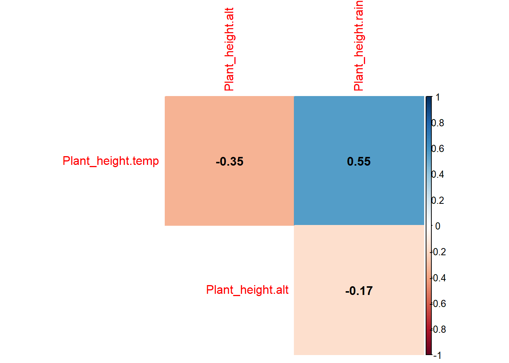
Here we can see there is a significant correlation between the predictors. A better approach is to compute the Variance Inflation Factor (VIF) of each coefficient \(\beta_j\). This is measure of how linearly dependent is \(X_j\) with the rest of predictors:
\[\text{VIF}(\beta_j)=\frac{1}{1-R^2_{X_j|X_{-j}}}\] where \(R^2_{X_j|X_{-j}}\) is the \(R^2\) from a regression of \(X_j\) into the remaining predictors. The next rule of thumb gives direct insight into which predictors are multicollinear:
- VIF close to 1: absence of multicollinearity.
- VIF larger than 5 or 10: multicolinearity problematic.
Others considered \(\sqrt{VIF}>2\) as critical limit to consider multicollinearity.
## temp alt rain
## 1.590787 1.140424 1.438287## temp alt rain
## FALSE FALSE FALSENone of the predictors seem problematic here.
##
## Call:
## lm(formula = loght ~ temp + alt + rain, data = Plant_height)
##
## Residuals:
## Min 1Q Median 3Q Max
## -1.83849 -0.49760 -0.00025 0.39435 1.59110
##
## Coefficients:
## Estimate Std. Error t value Pr(>|t|)
## (Intercept) -3.553e-01 1.264e-01 -2.810 0.005514 **
## temp 2.906e-02 6.793e-03 4.278 3.1e-05 ***
## alt 3.701e-05 1.045e-04 0.354 0.723519
## rain 2.457e-04 6.226e-05 3.947 0.000115 ***
## ---
## Signif. codes: 0 '***' 0.001 '**' 0.01 '*' 0.05 '.' 0.1 ' ' 1
##
## Residual standard error: 0.6595 on 174 degrees of freedom
## Multiple R-squared: 0.309, Adjusted R-squared: 0.2971
## F-statistic: 25.93 on 3 and 174 DF, p-value: 6.461e-14
Model selection
If you aim is to predict you are looking for the best model. An information criterion balances the fitness of a model with the number of predictors employed. Hence, it determines objectively the best model as the one that minimizes the information criterion. Two common criteria are the Bayesian Information Criterion (BIC) and the Akaike Information Criterion (AIC).
\(AIC(model)=-2*logLik(model) + npar(model) * 2\)
\(BIC(model)=-2*logLik(model) + npar(model) * log(n)\)
where \(Lik(model)\) is the likelihood of the model (how well the model fits the data) and \(npar(model)\) is the number of parameters of the model, \(k+2\) in the case of a multiple linear regression model with \(k\) predictors.The AIC replaces \(log(n)\) by \(2\), so it penalizes less complex models.This is one of the reasons why BIC is preferred by some practitioners for model comparison. Also, because is consistent in selecting the true model: if enough data is provided, the BIC is guaranteed to select the data-generating model among a list of candidate models.
Both are based on a balance between the model fitness and its
complexity.Both BIC and AIC can be computed in R
through the functions BIC and AIC. They take a
model as the input. The lower the better with a rule of thumb = 2.
Note: Do you remember about sigma (the Residual Standard
Error, RSE)? We previously used it to calculate a pecrcentage error.
Well, AIC and BIC used the log likelihood of the model obtain using
logLik (model). You can recalculate this logLik using:
sum(log(dnorm(x = y, mean = predict(model), sd = sigma(model))))
which illustrate the connection between sigmaand
information criterion.
mod3_plant<-lm(formula = loght ~ temp + rain, data = Plant_height)
BIC(mod1_plant); BIC(mod2_plant); BIC(mod3_plant)## [1] 383.8952## [1] 378.7943## [1] 373.7409## [1] 374.3499## [1] 362.8854## [1] 361.0138However, selecting a subset of predictor variables from a larger set
(e.g., stepwise selection) remains a controversial topic. You can
perform stepwise selection (forward, backward, both) using the
stepAIC() and stepBIC() function from the
MASS package. stepAIC() performs stepwise
model selection by exact AIC.
Source: Alistair Poore, Andrew Letten, Gordana Popovic
ANOVA
Analysis of variance (ANOVA) is one of the most frequently used techniques in the biological and environmental sciences. ANOVA is used to contrast a continuous dependent variable \(y\) across levels of one or more categorical independent variables \(x\). The independent variables are termed the factor or treatment, and the various categories within that treatment are termed the levels. We will start with the simplest design - those ANOVA with a single factor.
Where an independent samples t-test would be used for comparison of group means across two levels, ANOVA is used for the comparison of >2 group means, or when there are more than two or more predictor variables. The logic of this test is essentially the same as the t-test - it compares variation between groups to variation within groups to determine whether the observed differences are due to chance or not.
One-way ANOVA
Also called single factor ANOVA.
For example, to compare the hatching times of turtle eggs incubated at four different temperatures (15°C, 20°C, 25°C and 30°C); hatching time is the continuous response variable and temperature is the categorical predictor variable with with four levels. The null hypothesis would be that mean hatching time is equal for all temperatures.
\(H_0: \mu_{15}=\mu_{20}=\mu_{25}=\mu_{30}\)
Note that an ANOVA is a linear model, just like linear regression except that the predictor variables are categorical rather than continuous.
\(y_{ij}=\mu + \beta_i + \epsilon_{ij}\)
where \(\mu\) is the overall mean and \(\beta_i\) is the effect of the \(i^{th}\) group.
It is the same as a multiple linear regression with a predictor variable for each level of the categorical variable (each coded as a dummy variable). For the question of whether hatching time of turtles differs between four incubation tempeatures, we must fit four parameters to describe the mean response of each temperature (rather than just a single intercept and single slope in a simple linear regression). For this example, our linear model equation will have this form:
\(HatchingTime=\mu+\beta_1.Temp_{15}+\beta_1.Temp_{20}+\beta_1.Temp_{25}+\beta_1.Temp_{30}+\epsilon\)
ANOVA partitions the total variance into a component that can be explained by the predictor variable (among levels of the treatment), and a component that cannot be explained (within levels, the residual variance). The test statistic, F, is the ratio of these two sources of variation.
\(F=\frac{MS_{among}}{MS_{within}}\)
where MS are the mean squares, a measure of variation. The probability of obtaining the observed value of F is calculated from the known probability distribution of F, with two degrees of freedom (one for the numerator = the number of levels -1) and one for the denominator (number of replicates per level - 1 x number of levels).
Running the analysis
The data should be formatted such that the individual replicates are
rows and the variables are separate in columns. Include a column for the
dependent variable, \(y\), and a
corresponding column for the categorical variable, \(x\). Download the sample data set for the
turtle hatching example, turtles.csv, import into R and
check that temperature variable is a factor with the str
function.
## 'data.frame': 40 obs. of 2 variables:
## $ Temperature: int 15 15 15 15 15 15 15 15 15 15 ...
## $ Days : int 37 43 45 54 56 65 62 73 74 75 ...In this case, because we have numbers for the four levels of the Temperature treatment, we need to change that variable to become a factor rather than an integer.
turtles$Temperature <- factor(turtles$Temperature)
boxplot(Days ~ Temperature, data = turtles, ylab = "Hatching time (days)", xlab = "Temperature (C)")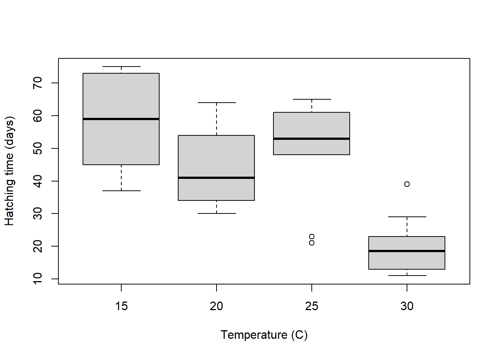
Now, we can run the analysis of variance contrasting hatching time
(days) across temperatures using the function aov. The
arguments of the function are simply a formula statement,
y~x, with the response variable to the left of the
~, the predictor variable to the right, and some code to
specify which data frame holds those variables.
## Df Sum Sq Mean Sq F value Pr(>F)
## Temperature 3 8025 2675.2 15.98 9.08e-07 ***
## Residuals 36 6027 167.4
## ---
## Signif. codes: 0 '***' 0.001 '**' 0.01 '*' 0.05 '.' 0.1 ' ' 1Check but the same can be produced by passing a lm in
anova(). An ANOVA is simply another way to summarize the
results of a lm, especially useful in case of categorical
variables.
## Analysis of Variance Table
##
## Response: Days
## Df Sum Sq Mean Sq F value Pr(>F)
## Temperature 3 8025.5 2675.16 15.978 9.082e-07 ***
## Residuals 36 6027.3 167.42
## ---
## Signif. codes: 0 '***' 0.001 '**' 0.01 '*' 0.05 '.' 0.1 ' ' 1The summary output of an ANOVA object is a table with the degrees of freedom (Df), sums of squares (Sum Sq), mean squares (Mean Sq) for the predictor variable (i.e., variation among levels of your treatment) and for the Residuals (i.e., varation within the levels). The test statistic, \(F\) value and its associated p-value (Pr(>F)) are also presented.
First check the degrees of freedom. The factor Df = the number of levels of your factor - 1. The residual \(Df = a(n-1)\), where \(a\) = the number of levels of your factor and \(n\) = sample size (replicates per level).
The sums of squares and mean squares are measures of variation. The \(F\) statistic is the ratio of \(MS_{among}\) and \(MS_{within}\) and the p-value is the probability of the observed \(F\) value from the \(F\) distribution (with the given degrees of freedom).
The main thing to look at in the ANOVA table is whether your predictor variable had a significant effect on your response variable. In this example, the probability that all four incubation temperatures are equal is <0.001. This is very unlikely and much less than 0.05. We would conclude that there is a difference in hatching times between the temperatures.
In the lm output , you get a bit more information.
##
## Call:
## lm(formula = Days ~ Temperature, data = turtles)
##
## Residuals:
## Min 1Q Median 3Q Max
## -28.200 -9.225 1.650 9.025 19.400
##
## Coefficients:
## Estimate Std. Error t value Pr(>|t|)
## (Intercept) 58.400 4.092 14.273 < 2e-16 ***
## Temperature20 -13.800 5.787 -2.385 0.0225 *
## Temperature25 -9.200 5.787 -1.590 0.1206
## Temperature30 -38.300 5.787 -6.619 1.04e-07 ***
## ---
## Signif. codes: 0 '***' 0.001 '**' 0.01 '*' 0.05 '.' 0.1 ' ' 1
##
## Residual standard error: 12.94 on 36 degrees of freedom
## Multiple R-squared: 0.5711, Adjusted R-squared: 0.5354
## F-statistic: 15.98 on 3 and 36 DF, p-value: 9.082e-07The output for the standard ANOVA table is down the bottom and above it you get the actual parameter estimates from the linear model (the \(\beta_1\), \(\beta_2\), etc. from above). In this example, turtles at 15°C hatched after 58.4 days, on average (the intercept in the model). The other parameter estimates are differences between each level of temperature and the intercept. For example, at 20°C they were 13.8 days faster (i.e., the mean for 20°C = 58.4-13.8 = 44.6 days).
If you detect any significant differences in the ANOVA, we are then interested in knowing exactly which groups differ from one another, and which do not. Remember that a significant p value in the test you just ran would reject the null hypothesis the means of the dependent variable were the same across all groups, but not identify which were different from each other. To see a comparison between each mean and each other mean, we can use a Tukey’s post-hoc test.
## Tukey multiple comparisons of means
## 95% family-wise confidence level
##
## Fit: aov(formula = Days ~ Temperature, data = turtles)
##
## $Temperature
## diff lwr upr p adj
## 20-15 -13.8 -29.38469 1.784689 0.0982694
## 25-15 -9.2 -24.78469 6.384689 0.3969971
## 30-15 -38.3 -53.88469 -22.715311 0.0000006
## 25-20 4.6 -10.98469 20.184689 0.8562615
## 30-20 -24.5 -40.08469 -8.915311 0.0008384
## 30-25 -29.1 -44.68469 -13.515311 0.0000785Assumptions
As for any linear models, The important assumptions of ANOVA are independence, homogeneity of variance and normality. Many advocate a qualitative evaluation of the normality and homogeneity of variance assumptions, by examining the patterns of variation in the residuals, rather than a formal test. Linear models in general are quite ‘robust’ for violating these assumptions (heterogeneity and normality), within reason of course.
par(mfrow = c(1, 3)) # This code put two plots in the same window
hist(turtles.aov$residuals)
plot(turtles.aov, which = 2)
plot(turtles.aov, which = 1)
Violations of normality and homogeneity of variance can be fixed via transformations or by using a different error-distribution in a generalised linear model (GLM).
Factorial ANOVA
Consider an example where a researcher is testing the effects of metal contamination on the number of species found in sessile marine invertebrates (sponges, bryozoans and sea squirts etc.). They would like to know whether copper reduces species richness, but also know that the richness of invertebrates can depend on whether the substrate is vertical or horizontal. Consequently, they ran an experiment where species richness was recorded in replicate samples in each of the six combinations of copper enrichment (“None”,“Low”,“High”) and orientation (“Vertical”,“Horizontal”). The experimental design in termed factorial because all levels of one treatment are represented in all levels of the other treatments (also termed orthogonal).
sessile <- read.csv(file = "data/sessile.csv", header = TRUE)
# check your predictors with `str`
boxplot(Richness ~ Copper * Orientation, data = sessile, names = c("High.H", "Low.H", "None.H", "High.V", "Low.V", "None.V"), ylab = "Species richness", xlab = "Copper/Orientation", ylim = c(0, 80))
The factorial ANOVA will test:
- whether there are any differences in richness among the three levels of copper enrichment
- whether there are any differences in richness among the two levels of substrate orientation
- whether there is any interaction between copper and orientation
You have three null hypotheses:
there is no difference between the means for each level of copper, Ho: \(\mu_{none}=\mu_{low}=\mu_{high}\)
there is no difference between the means for each level of orientation, Ho: \(\mu_{vertical}=\mu_{horizontal}\)
there is no interaction between the factors
This is far better than running two separate single factor ANOVAs that contrast copper effects for each level of orientation because you have more statistical power (higher degrees of freedom) for the tests of interest, and you get a formal test of the interaction between factors which is often scientifically interesting.
\(y_{ij}=\mu + \alpha_i + \beta_j + (\alpha\beta)_{ij} + \epsilon_{ijk}\)
where \(\mu\) is the overall mean, \(\alpha_i\) is the effect of the ith group of the first factor, \(\beta_j\) is the effect of the jth group of the second factor, and \(\alpha\beta\) the interaction. Athough we have two factors, and an interaction effect, this requires fitting more than 3 parameters in our model because we have 3 levels of Factor A (Copper) and 2 levels of Factor B (Orientation).
With two factors, ANOVA partitions the total variance into a component that can be explained by the first predictor variable (among levels of the treatment A), a component that can be explained by the second predictor variable (among levels of the treatment B), a component that can be explained by the interaction, and a component that cannot be explained (within levels, the residual variance). The test statistic, \(F\), is calculated three times to test each of the null hypotheses. For two fixed factors, the \(F\) ratios are:
\(F=\frac{MS_{A}}{MS_{within}}\)
\(F=\frac{MS_{B}}{MS_{within}}\)
\(F=\frac{MS_{AB}}{MS_{within}}\)
where MS are the mean squares, a measure of variation. The probability of obtaining the observed value of \(F\) is calculated from the known probability distribution of \(F\), with two degrees of freedom (one for the numerator = the number of levels -1) and one for the denominator. Note that these \(F\) ratios will change if any factors are random (see below for the distinction between fixed and random factors).
Running the analysis
For this two factor design, we use:
sessile.aov <- aov(Richness ~ Copper * Orientation, data = sessile)
# same as:
sessile.aov <- aov(Richness ~ Copper + Orientation + Copper:Orientation, data = sessile)
summary(sessile.aov)## Df Sum Sq Mean Sq F value Pr(>F)
## Copper 2 3330 1665.0 192.53 < 2e-16 ***
## Orientation 1 240 240.0 27.75 2.46e-06 ***
## Copper:Orientation 2 571 285.4 33.00 4.34e-10 ***
## Residuals 54 467 8.6
## ---
## Signif. codes: 0 '***' 0.001 '**' 0.01 '*' 0.05 '.' 0.1 ' ' 1## Analysis of Variance Table
##
## Response: Richness
## Df Sum Sq Mean Sq F value Pr(>F)
## Copper 2 3330.0 1665.02 192.529 < 2.2e-16 ***
## Orientation 1 240.0 240.00 27.752 2.464e-06 ***
## Copper:Orientation 2 570.7 285.35 32.995 4.341e-10 ***
## Residuals 54 467.0 8.65
## ---
## Signif. codes: 0 '***' 0.001 '**' 0.01 '*' 0.05 '.' 0.1 ' ' 1Check that you have the correct degrees of freedom. For a two factor design with fixed factors they are:
- Factor A: a - 1 (where a = number of levels of Factor A)
- Factor B: b - 1 (where b = number of levels of Factor B)
- Interaction (AB): (a-1)(b-1)
- Residual: ab(n -1) (where n = sample size)
The sums of squares and mean squares are measures of variation. There are three F statistics, corresponding to a test of each of the main effects and one for the interaction. The p-values are the probabilities of the observed F values from the F distribution (with the given degrees of freedom).
In this example, there is strong evidence to reject all three null hypotheses:
- that all levels of the copper treatment are equal (P < 0.001),
- that the vertical and horizontal orientations are equal (P < 0.001)
- that there is no interaction between copper and orientation (P < 0.001)
A significant interaction means that the effect of one factor depends upon the other. In this example, it would mean that the effect of copper was not consistent between the vertical and horizontal habitats. Consequently, the interpretation of the main effects becomes more complex and it is better to limit your interpretation to the interaction term. A quick way to help you understand an interaction if you get one is to examine an interactions plot.

Here you can see that the effect of copper (a decline in species richness) is more pronounced in the habitats with a vertical orientation, and that the difference between the two habitats changes with exposure to copper.
Multiple comparisons If you detect any significant differences in the ANOVA, we are then interested in knowing exactly which levels differ from one another, and which do not. Remember that a significant p value in the test you just ran would reject the null hypothesis the means were the same across all groups, but not identify which were different from each other. If there is no interaction, you can run a post-hoc test on each of the main effects (only needed if there are more than two levels for an effect). If there is an interaction, you will need to consider post-hoc tests that contrast the means from all combinations of both factors.
Assumptions
The assumptions of factorial ANOVA’s are the same as for all linear models including the simpler one-way ANOVA’s, being independence, normality and homogeneity of variances. We also need to consider two new issues: 1) whether your factors are fixed or random, and 2) whether your sampling or experimental design is balanced (i.e., has the same number of replicates in each combination of treatments).
Fixed and random factors There is an important distinction between factors whose levels are the only ones of interest (termed fixed), and factors whose levels are a sampled from a larger collection of possible levels (termed random). For example, if we repeated the experiment above at three different sites in another harbour, chosen from many possible sites, we would consider site a random factor. We are not interested in those sites in particular, but would like to know if our experimental treatments were consistent across sites. On the other hand, if you were only interested in Keelung Harbour and Kaoshiung Harbour, then these two could be considered two levels of a fixed factor. Treating sites as a fixed factor in that case means that you conclusions should not be extrapolated to other possible sites, but restricted to those particular sites.
Statistically, there is a big difference between a fixed factors were you have measured all possible levels of interest (e.g, control vs a single treatment) and random factors where the levels are sampled from all possible levels. In analysis of variance, all this matters because the F-tests that are being used to test your hypotheses are constructed differently depending on which factors are fixed and random. In the example above, all factors were fixed and the denominator of all F tests was \(MS_{within}\). In models with all factors random, and models with a mix of fixed and random factors (termed mixed effects models), other components of the variation are used as the denominators in the \(F\) tests.
If you have random factors, you will need to read more to establish the correct F ratios for your specific design.
Balanced and unbalanced designs Ideally, factorial ANOVA should be conducted with a balanced design - one with the same number of replicates in each combination of factors. Balanced designs are less likely to be affected by minor deviations from the assumptions of normality and homogeneity of variance. Unfortunately, unbalanced designs where you have unequal numbers of replicates for each level are common in practice (e.g. bad weather prevented sampling the second site as intensively, volunteer lost the data sheet etc!).
Unbalanced designs are more susceptible to violating the assumptions
of ANOVA and there is no single way to partitioning the \(SS_{total}\) into the main effect and
interaction components. The aov and lm
functions in R use what are called Type I sums of
squares where the terms in the model are fitted sequentially
(i.e., how much variation is explained by factor A, then how
much additional variation is explained by adding factor B).
This means that the order of the terms in model matters: the model
formula Y ~ A + B + A:B and Y ~ B + A + B:A
will give you different results.
There is a fair bit of debate on this in the statistical literature,
but many advise using what are called Type II or
Type III sums of squares for unbalanced designs. Other
software packages like SPSS, SYSTAT and Minitab will automatically use
Type III sums of squares where the order of terms in the model doesn’t
matter. To access these in R, we can use the Anova function
in the car package. But this debate is also one of reason
many researcher prefer to avoid or does not like ANOVAs.
Nested ANOVA
In the two-way ANOVA design, the two factors are known as factorial (i.e., there was every combination of every level of each factor). Other experimental designs feature factors that are termed nested. This is when each level of one of the factors is unique to only one level of the other factor. In the nested design, the levels of factor B appear in only one of the levels in factor A, not both. This often happens with factors like “site” or “area” - they usually belong to only one level of your other factor. Factor B is termed nested within factor A, usually written as B(A). These designs have different sources of variance to the factorial designs, and do not have an interaction term. The designs are quite common in ecology and environmental sciences, and are often used to partition variance in spatially hierarchical sampling (e.g., habitats, areas within habitats, plots within areas etc.).
The examples below comes from an experiment investigating the impact of introduced American mink on small rodents (voles) in Finland. The hypothesis was that mink prey upon voles thereby reducing vole numbers and limiting their population size. To test this, minks were removed from large areas (> 20 km2) in the Baltic Sea. The Ho from the experiment is that the mean count of voles on islands in removal sites will be the same as the mean vole count on islands in control areas. The data represent two treatments (mink removal and control) and two areas nested within each treatment. Then there are 10 samples in each area. Each of these samples represents the numbers of individual voles trapped on an island (all islands were more than 300 m apart ensuring some independence) over 4 nights.
The design is nested because an area cannot belong to both a removal treatment and a control. It is useful to think of areas as being the replicates for the treatment, and the individual samples as being replicates for each area.
Running the analysis
# Input data file and check the structure of the data
mink <- read.csv(file = "data/mink.csv", header = TRUE)
# grouped boxplot
ggplot(mink, aes(x=Treatment, y=Voles, fill=Area)) +
geom_boxplot()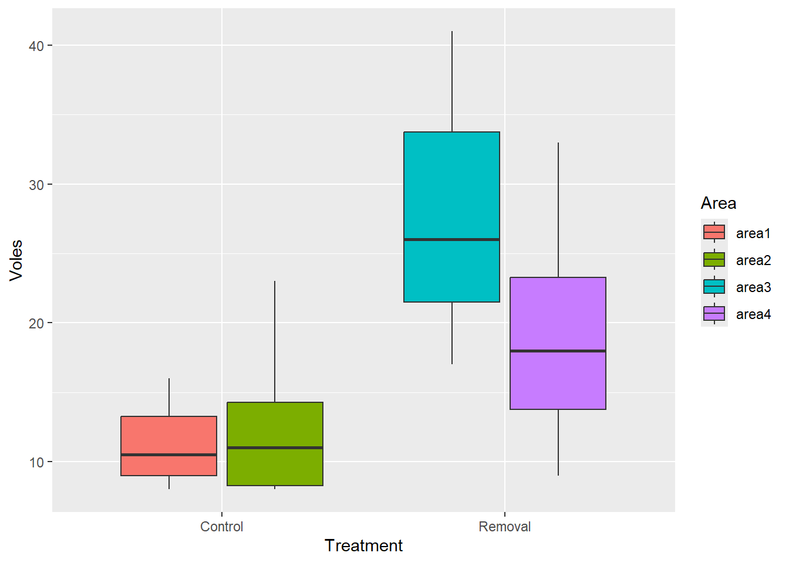
## Df Sum Sq Mean Sq F value Pr(>F)
## Treatment 1 1416.1 1416.1 38.39 3.81e-07 ***
## Treatment:Area 2 357.8 178.9 4.85 0.0136 *
## Residuals 36 1328.0 36.9
## ---
## Signif. codes: 0 '***' 0.001 '**' 0.01 '*' 0.05 '.' 0.1 ' ' 1The output is a little different to the factorial ANOVA. The top section gives a significance test of the fixed effect, Treatment, - this is what we’re interested in. The residuals for this test are those associated with the random effect ‘Area’.
A significant F-ratio (P<0.05) for a nested factor indicates high variance among subgroups within a group. For example, a difference in mean vole numbers of the two areas within a treatment. This is expected, however, leads to few degrees of freedom to test main effects. Additionally, it suggests treatments may not have a uniform effect across levels of the nested factor. For example, voles in one removal area showed a stronger response than another area.
F-ratios
- Among groups = MSamong/MSsubgroup
- Factor B = MSsubgroup/MSResidual
Degrees of freedom
- Among groups = (a - 1) (where a = number of levels of Factor A)
- Among subgroups = a(b - 1) (where b = number of levels of Factor B)
- Within subgroups = ab(n - 1) (where n = sample size)
Where there are greater than 2 levels of the the fixed factor of interest, post-hoc analysis can be used to determine which groups differ.
Pooling Always examine nested factors before the upper levels. If the variance explained by the nested factor is negligible, it can be pooled. If the F ratio of MSsubgroup/MSwithin is non significant then you don’t need subgroups and can perform a one factor analysis.
If MSsubgroup/MSwithin is non-significant at p = 0.05, there may be subgroup effects (may be high Type II error). To be cautious, only pool SS when P>>>0.05, so there is very little chance that you are incorrectly accepting the null hypothesis of no effect.
Assumptions
The same assumptions of linear models apply to nested ANOVA’s; independence, normality and heterogeneity of variances. Because tests of the fixed factor A uses uses the means of the nested Factor B, the assumptions of homogeneity and normality apply with respect to the means of Factor B.
Source: James Lavender & Alistair Poore
GLMs
Generalised linear models (GLMs) are used when the distribution of data do not conform to the assumptions of linear models, specifically the assumptions of normally distributed residuals and no relationship between the variance and the mean (e.g., presence/absence, count or highly skewed data).
Introduction
Linear models (e.g., linear regression) are used to model the relationship between a continuous response variable \(y\) and one or more explanatory variables \(x_1,x_2,...\). When we have a discrete response we can use GLMs.
Properties of GLM’s Discrete response data, like counts and presence/absence data, generally exhibit a mean-variance relationship (e.g. small mean small variance vs large mean large variance). For example; for counts that are on average 5, we would expect most samples to be between about 1 and 9, but for counts that are on average 500, most of the observations will tend to be between 450 and 550, giving us a much larger variance when the mean is large. In contrast, as we know it already, linear models assume constant variance. You might transform count data and fit a linear model. This can reduce the mean variance relationship, but it won’t get rid of it completely, especially if you have a lot of zeros in your data. To analyse discrete data accurately we need to use GLM’s.
A GLM makes some important assumptions (we’ll check these later for our examples):
- The observed \(y\) are independent, conditional on some predictors \(x\)
- The response \(y\) come from a known distribution with a known mean-variance relationship
- There is a straight line relationship between a known function \(g\) of the mean of \(y\) and the predictors \(x\)
\(g(\mu_y)=\alpha+\beta_1x_1+\beta_2x_2+...\)
Note: link functions g() are an important part of
fitting GLM’s, but beyond the scope of this introductory tutorial. All
you need to know is that the default link for binomial data is the
logit() and for count data it’s log(). For
more information see ?family.
Binomial example
If had surveyed a beach and wanted to analyse how the presence of a crab varied with time and distance from the water line, the response variable is discrete: the presence or absence of a crab in a given replicate. The first few rows of the data set would look like this:
## X Dist Time CrabPres
## 1 1 0 5 0
## 2 2 0 5 1
## 3 3 0 5 1
## 4 4 0 5 0
## 5 5 0 5 0
## 6 6 2 5 0Running the analysis
The variable CrabPres contains binomial data,
i.e. presence/absence data or data as 0/1.Fitting a GLM uses a very
similar syntax to fitting linear models but we use the glm
function instead of lm. We also need to indicate the
family as an argument to the function. To test whether the
probability of crab presence changes with time (a factor) and distance
(a continuous variable), we fit the following model. The response
variable (presence/absence of crabs) is binomial, so we use
family=binomial.
Assumptions
Before we look at the results of our analysis it’s important to check that our data met the assumptions of the model we used. Let’s look at all the assumptions in order.
Assumption 1 : The observed \(y\) are independent, conditional on some predictors \(x\)
We can’t check this assumption from the results, but you can ensure it’s true by taking a random sample for your experimental design. If your experimental design involves any pseudo-replication, this assumption will be violated. For certain types of pseudo-replication you can use mixed models instead.
Assumption 2 : The response \(y\) come from a known distribution with a known mean-variance relationship
The mean variance relationship is the main reason we use GLM’s instead of linear models. We need to check that the distribution models the mean-variance relationship of our data well. For binomial data this is not a big concern, but later on when we analyse count data it’ll be very important. To check this assumption we look at a plot of residuals, and try to see if there is a fan shape.

Unfortunately the glm plot function gives us a very odd
looking plot due to the discreteness of the data (i.e., many points on
top of each other). For a more useful plot we can instead fit the model
using the manyglm function in the mvabund
package. We need a slight change to the family argument, for
manyglm we write family = "binomial".
ft.crab.many <- manyglm(CrabPres ~ Time * Dist, family = "binomial", data = Crab_PA)
plot(ft.crab.many)## Warning in default.plot.manyglm(x, res.type = res.type, which = which, caption
## = caption, : Only the first 1 colors will be used for plotting.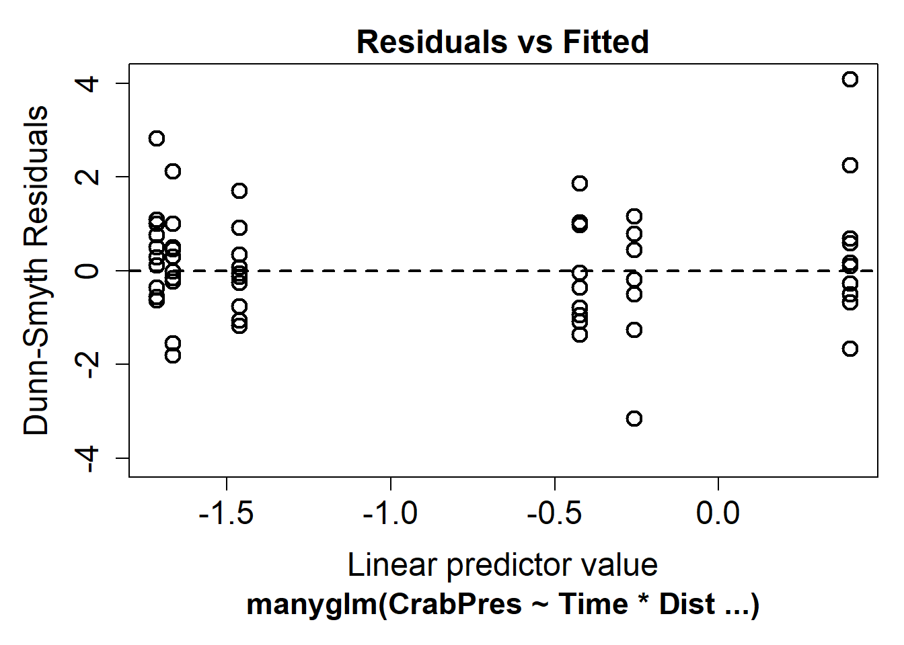
Now we can look for a fan shape in the residual plot. For these data, there doesn’t seem to be a fan shape, so we can conclude the mean-variance assumption the model made was reasonable for our data. The residuals in this plot have a random component. If you see a pattern it’s best to repeat the plot a few times to see if the pattern is real.
Assumption 3 : There is a straight line relationship between a known function \(g\) of the mean \(y\) and he predictor \(x\)
To check this assumption, we check the residual plot above for
non-linearity, or a U-shape. In our case there is no evidence of
non-linearity. If the residuals seem to go down then up, or up then
down, we may need to add a polynomial function of the predictors using
the poly function.
Interpreting
If all the assumption checks are okay, we can have a look at the
results the model gave us. The two main functions for inference are the
same as for linear models: summary and
anova.
The p-values these give you if you use glm for fitting
the model work well in large samples, although they are
approximate. For binomial models in particular the
p-values from the summary function can be funny, and the
use of the anova function is often preferred to see if
predictors are significant. The summary() function is still
useful to look at the model equation.
## Analysis of Deviance Table
##
## Model: binomial, link: logit
##
## Response: CrabPres
##
## Terms added sequentially (first to last)
##
##
## Df Deviance Resid. Df Resid. Dev Pr(>Chi)
## NULL 56 71.097
## Time 1 6.6701 55 64.427 0.009804 **
## Dist 1 0.7955 54 63.631 0.372448
## Time:Dist 1 0.1647 53 63.466 0.684852
## ---
## Signif. codes: 0 '***' 0.001 '**' 0.01 '*' 0.05 '.' 0.1 ' ' 1The p-value for Time is small (P<0.01), so we conclude
there is an effect of time on the presence of crabs,
but no effect of distance or an interaction between time and
distance. This sample is reasonably large, so these p-values
should be a good approximation. For a small sample it is often better to
use resampling to calculate p-values. When you use manyglm
the summary and anova functions use resampling by default.
## Time elapsed: 0 hr 0 min 0 sec## Analysis of Deviance Table
##
## Model: CrabPres ~ Time * Dist
##
## Multivariate test:
## Res.Df Df.diff Dev Pr(>Dev)
## (Intercept) 56
## Time 55 1 6.670 0.010 **
## Dist 54 1 0.795 0.399
## Time:Dist 53 1 0.165 0.718
## ---
## Signif. codes: 0 '***' 0.001 '**' 0.01 '*' 0.05 '.' 0.1 ' ' 1
## Arguments: P-value calculated using 999 iterations via PIT-trap resampling.In this case the results are quite similar, but in small samples it can often make a big difference. (Note on PIT-trap resamping: bootstrap method based on probability integral transform)
You can also use summary with either the
glm or manyglm function. This is interpreted
in a similar manner as for linear regression, but we need to include the
link function, g.
##
## Call:
## glm(formula = CrabPres ~ Time * Dist, family = binomial, data = Crab_PA)
##
## Deviance Residuals:
## Min 1Q Median 3Q Max
## -1.3518 -0.6457 -0.5890 1.0125 1.9390
##
## Coefficients:
## Estimate Std. Error z value Pr(>|z|)
## (Intercept) -3.00604 1.47469 -2.038 0.0415 *
## Time 0.25835 0.17439 1.481 0.1385
## Dist -0.03193 0.23923 -0.133 0.8938
## Time:Dist 0.01143 0.02830 0.404 0.6863
## ---
## Signif. codes: 0 '***' 0.001 '**' 0.01 '*' 0.05 '.' 0.1 ' ' 1
##
## (Dispersion parameter for binomial family taken to be 1)
##
## Null deviance: 71.097 on 56 degrees of freedom
## Residual deviance: 63.466 on 53 degrees of freedom
## AIC: 71.466
##
## Number of Fisher Scoring iterations: 4If \(p\) is the probability of crab presence, this output tells us:
\(logit(p) = -3.01 + 0.26 * Time - 0.03 * Dist + 0.01 * Time * Dist\)
Conclusion: We used a binomial linear model because
of binary data (presence/abscence) of crabs. Inference was carried out
using bootstrap resampling with 1000 resamples (default when using
manyglm). There is strong evidence that the presence of
crabs varies with time (p = 0.01). Note that for multiple predictors
it’s best to display the results in a table.
Confused about bootstrapping. They are quests: https://youtu.be/Xz0x-8-cgaQ?si=6lD6DBluu3y7Vv-g
Poisson example
For this worked example, we have counts of different animal groups at control sites and sites where bush regeneration has been carried out (treatment). We want to know if the the bush regeneration activities have affected the count of slugs.
## Treatment Site Acarina Amphipoda Araneae Blattodea Coleoptera Collembola
## 1 Revegetated 8 147 28 0 0 10 1700
## 2 Revegetated 8 82 27 0 0 7 3200
## 3 Revegetated 8 131 35 0 0 9 4367
## 4 Revegetated 8 25 10 0 0 59 360
## 5 Revegetated 8 20 56 1 0 12 500
## 6 Revegetated 7a 16 3 1 0 3 1850
## Dermaptera Diotocardia Diplura Diptera Formicidae Haplotaxida Hemiptera
## 1 1 1 0 11 128 4 0
## 2 0 0 0 11 130 7 0
## 3 0 1 0 18 120 0 7
## 4 0 0 0 82 9 7 5
## 5 0 0 0 31 38 0 0
## 6 0 0 0 26 26 2 0
## Hymenoptera Isopoda Larvae Lepidoptera Polydesmida Pseudoscorpionida
## 1 0 0 3 0 0 0
## 2 0 6 3 0 0 1
## 3 1 2 13 0 0 2
## 4 2 1 229 0 1 0
## 5 46 0 0 0 1 0
## 6 2 0 0 0 0 0
## Scolopendrida Seolifera Soleolifera Thysanoptera Tricladida
## 1 0 0 3 0 0
## 2 0 0 5 0 0
## 3 0 0 17 0 0
## 4 0 0 1 0 0
## 5 0 5 0 0 0
## 6 0 0 0 0 0If you view the frequency histogram of the slug counts, you will see that it is very skewed, with many small values and few large counts (the variable name, Soleolifera, is the order name of terrestrial slugs).
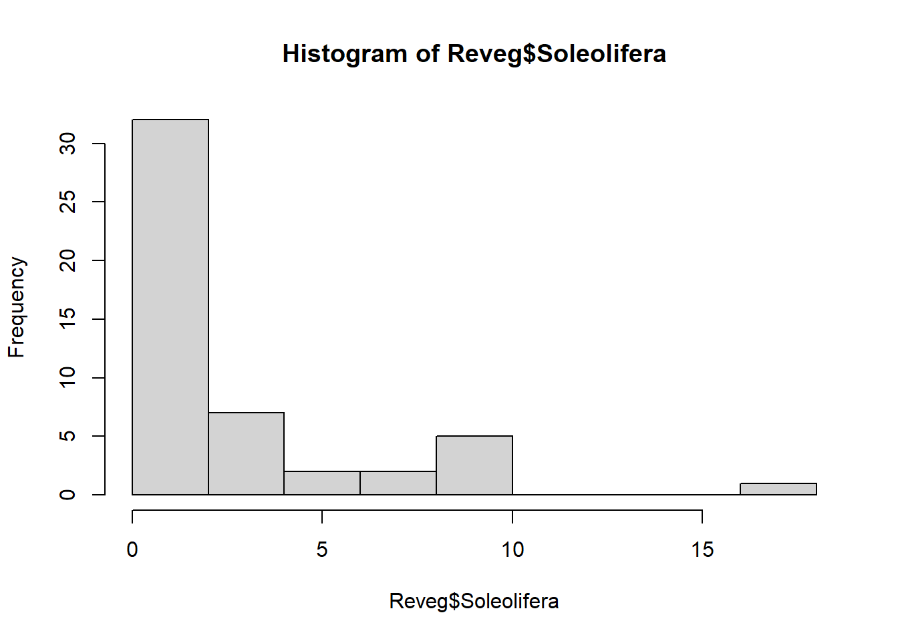
The default distribution for count data is the Poisson. The Poisson distribution assumes the variance equals the mean. This is quite a restrictive assumption which ecological count data often violate. We may need to use the more flexible negative-binomial distribution instead.
Running the analysis
We can use a GLM to test whether the counts of slugs (from the order
Soleolifera) differ between control and regenerated sites. To fit the
GLM, we will use the manyglm function instead of
glm so we have access to more useful residual plots.
where Soleolifera is the response variable, and Treatment is the predictor variable (with two levels, control and revegetated).
Assumptions
Before we look at the results, we need to look at the residual plot to check the assumption

It’s hard to say whether there is any non-linearity in this plot, this is because the predictor is binary (treatment vs revegetated). Looking at the variance assumption, it does appear there is a fan shape. The residuals are more spread out on the right than the left - we call this overdispersion.
This tells us the variance assumption of the Poisson may be too
restrictive and we should try a different distribution. We can instead
fit a negative-binomial distribution in manyglm by changing
the family argument to family="negative binomial".
Look again at the residual plot:

This seems to have improved the residual plot. There is no longer a strong fan shape, so we can go ahead and look at the results.
Interpreting
## Time elapsed: 0 hr 0 min 0 sec## Analysis of Deviance Table
##
## Model: Soleolifera ~ Treatment
##
## Multivariate test:
## Res.Df Df.diff Dev Pr(>Dev)
## (Intercept) 48
## Treatment 47 1 10.52 0.002 **
## ---
## Signif. codes: 0 '***' 0.001 '**' 0.01 '*' 0.05 '.' 0.1 ' ' 1
## Arguments: P-value calculated using 999 iterations via PIT-trap resampling.##
## Test statistics:
## wald value Pr(>wald)
## (Intercept) 1.502 0.015 *
## TreatmentRevegetated 3.307 0.001 ***
## ---
## Signif. codes: 0 '***' 0.001 '**' 0.01 '*' 0.05 '.' 0.1 ' ' 1
##
## Test statistic: 3.307, p-value: 0.001
## Arguments: P-value calculated using 999 resampling iterations via pit.trap resampling.Both indicate strong evidence of a treatment effect (p<0.01). To extract the model equation we can look at the coefficients from the fit.
## Soleolifera
## (Intercept) -0.9162907
## TreatmentRevegetated 2.1202635The default link function for Poisson and negative binomial models is \(log\). If we write the mean count as \(\lambda\)
\(log(\lambda)=-0.92+2.12 \times Treatment\)
Conclusion: We used a negative-binomial generalised
linear model due to overdispersion evident in the data. Inference was
carried out using bootstrap resampling with 1000 resamples (default when
using manyglm ). There is strong evidence of positive
effect of bush regeneration on the abundance of slugs from the order
Soleolifera (p < 0.001).
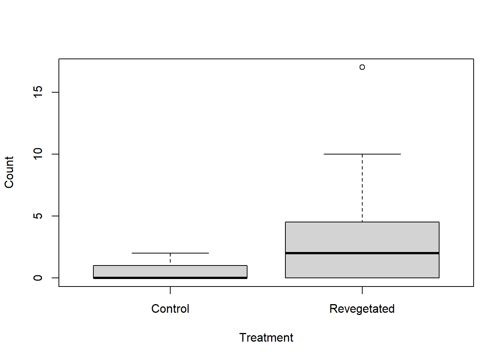
Source: Gordana Popovic
Mixed models
Mixed models are those with a mixture of fixed and random effects. Random effects are categorical factors where the levels have been selected from many possible levels and the investigator would like to make inferences beyond just the levels chosen. Tricky concept, but imagine contrasting two habitat types (forest and grassland) by sampling five sites within each, and five replicate measures within each site. Habitat type is a fixed factor with the researcher only interested in those two levels of habitat type. If the five sites were chosen from a larger collection of possible sites, then site is considered a random effect with 10 levels.
You will need to use mixed effect models if you have a random factor in your experimental design. A random factor:
- is categorical
- has a large number of levels
- only a random subsample of levels is included in your design
- you want to make inference in general, and not only for the levels you observed
Assumptions of mixed models
- The observed \(y\) are independant, conditional on some predictor \(x\)
- The response \(y\) are normally distributed, conditional on some predictors \(x\)
- The response \(y\) has constant variance, conditional on some predictors \(x\)
- There is a straight line relationship between \(y\) and the predictors \(x\) and random effects \(z\)
- Random effect \(z\) are independant of \(y\)
- Random effect \(z\) are normally distributed
This is a tough concept to get your head around, and is best
explained with an example. The data we will analyse here are counts of
invertebrates at 3-4 sites in each of 7 (randomly chosen) estuaries.
Here the estuaries are the random effect, as there are a large number of
possible estuaries, and we only sample from a random few of them, but we
would like to make inference about estuaries in general. We will use the
package lme4 for all our mixed effect modelling. It will
allow us to model both continuous and discrete data with one or more
random effects.
Linear Mixed models with one random effect
We aim to investigate the effects of water pollution on the abundance of some subtidal marine invertebrates by comparing samples from altered and pristine estuaries. Since the total counts are large, we assume the data are continuous (not skewed to 0). In this dataset, we focus on the effects of modification on invertebrates, regardless of the estuaries.
Running the analysis
We have a fixed effect (Modification; modified vs
pristine) and a random effect (Estuary). We can use the
lmer function to fit a model for any dependent variables
with a continuous distribution. To fit a model for the
Total abundance variable, we use:
where Total is the dependent variable
(left of the ~), Modification is the
fixed effect, and Estuary is the
random effect.
Note the syntax for one random effect is (1|Estuary) -
this is fitting a different intercept (hence 1) for each
Estuary.
This model can be fit by maximum likelihood (REML=F) or
restricted maximum likelihood (REML=T). For fitting models
it’s best to use REML=T, as it is less biased (unbiased for
balanced samples), particularly in small samples. However to use the
anova function and/or comparing models we need to refit
with maximum likelihood.
Model assumptions
Before we look at the results of our analysis, it’s important to check that our data met the assumptions of the model we used. Let’s look at all the assumptions in order.
Assumption 1: The observed \(y\) are independent, conditional on some fixed effects \(x\) and random effects \(z\)
We can’t check this assumption, but you can ensure it’s true by taking a random sample within each level of the random effect in your experimental design.
Assumption 2: The response \(y\) are normally distributed, conditional on some predictors \(x\) and random effects \(z\)
This assumption is only critical when we have a small sample size or very skewed data. We can check it with a normal quantile plot of residuals.
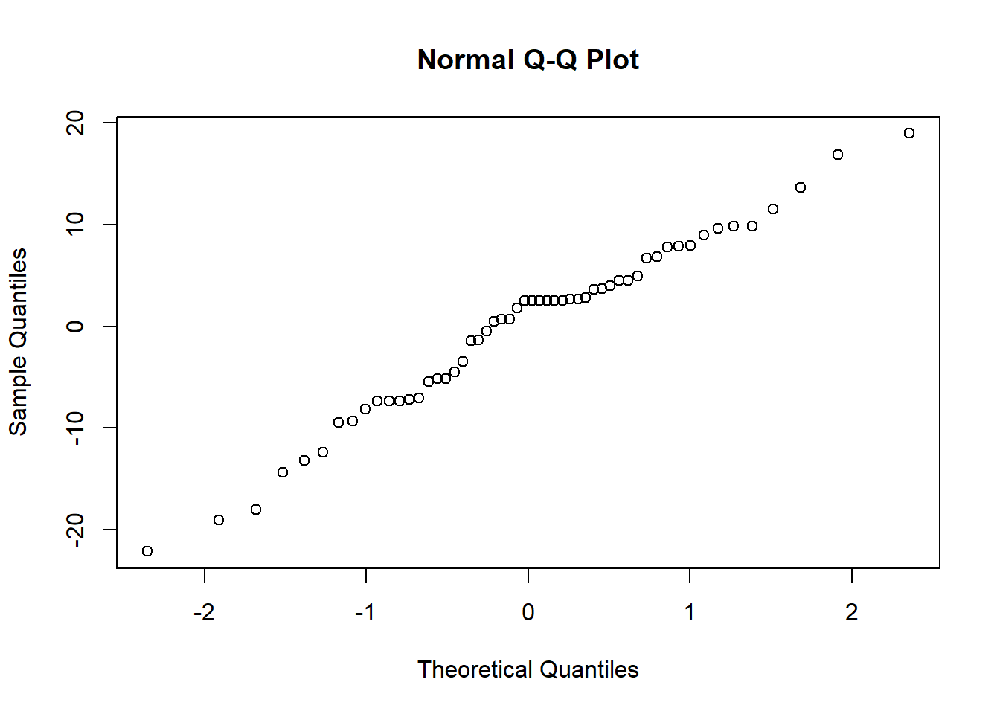
We are looking for a straight line relationship. Here, the assumption of normality seems reasonable.
Assumption 3: The response \(y\) has constant variance, conditional on some fixed effects \(x\) and random effects \(z\)
Like a linear model, a mixed model assumes constant variance. We can check this by looking for a fan shape in the residual plot (residuals vs fitted values).
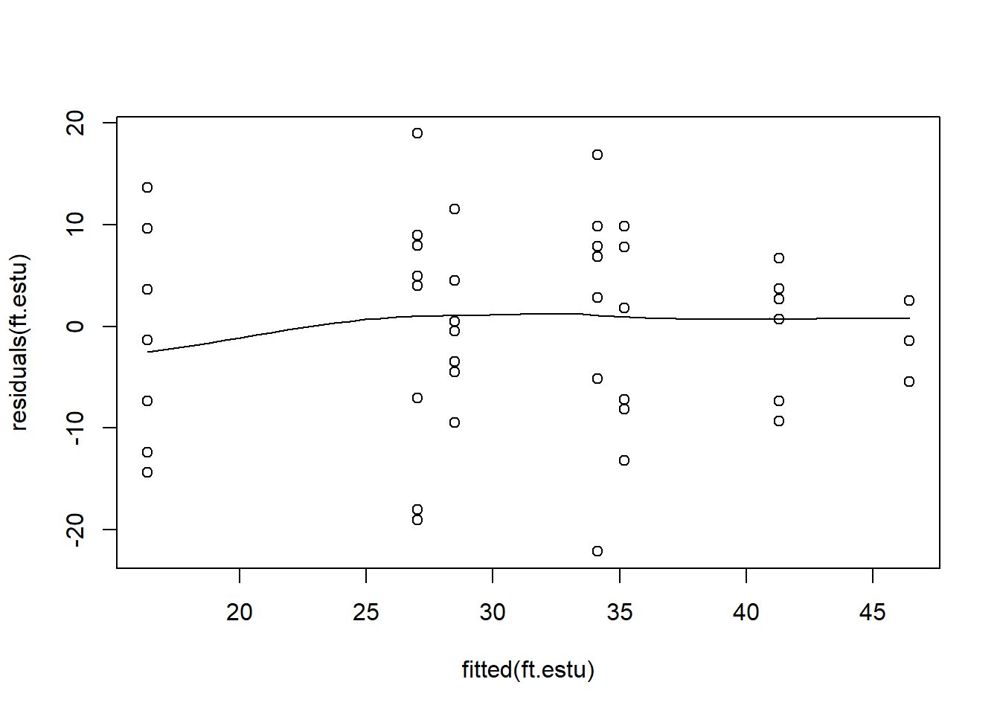
This residual plot seems reasonable, there are differences in
variability between estuaries, but variability does not increase with
the mean. Note, that the function scatter.smooth is just a
scatter plot with a fitted, smoothed curve.
Assumption 4: There is a straight line relationship between \(y\) and the predictor \(x\) and random effect \(z\)
To check this assumption, we check the residual plot again for
non-linearity, or a U-shape. In our case there is no evidence of
non-linearity. If the residuals seem to go down then up, or up then
down, we may need to add a polynomial function of the predictors using
the poly function.
Assumption 5: Random effects z are
independent of y.
We can’t check this assumption, but you can ensure it’s true by taking a random sample of estuaries.
Assumption 6: Random effects z are
normally distributed.
This assumption is not crucial (and difficult) to check.
Model interpretation
Hypothesis test for the fixed effect
The package lme4 won’t give you p-values for fixed
effects as part of the output in summary. This is because
the p-values from Wald tests (using summary) and likelihood
ratio tests (using anova) are only approximate in mixed
models.
Nevertheless, we will use the anova function to test for
an effect of modification on the total abundance of invertebrates,
taking into account the random effect of estuary.
First, we fit the full model by maximum likelihood, and a second model that lacks the fixed effect of Modification
ft.estu <- lmer(Total ~ Modification + (1 | Estuary), data = Estuaries, REML = F)
ft.estu.0 <- lmer(Total ~ (1 | Estuary), data = Estuaries, REML = F)Then, we compare these two models with a likelihood ratio test, using
the anova function.
## Data: Estuaries
## Models:
## ft.estu.0: Total ~ (1 | Estuary)
## ft.estu: Total ~ Modification + (1 | Estuary)
## npar AIC BIC logLik deviance Chisq Df Pr(>Chisq)
## ft.estu.0 3 415.02 420.99 -204.51 409.02
## ft.estu 4 411.92 419.87 -201.96 403.92 5.1055 1 0.02385 *
## ---
## Signif. codes: 0 '***' 0.001 '**' 0.01 '*' 0.05 '.' 0.1 ' ' 1We find that there is evidence of an effect of Modification (p =
0.02385). The package lmerTestextended output of the
summary of your lmer object. Here, the results will give
you p= 0.067611 for the effect of Modification. As mentioned earlier,
whether p-values provide the right indication for significance is the
object of discussion.
We can also calculate confidence intervals for each model parameter using the confint function.
## Computing profile confidence intervals ...## 2.5 % 97.5 %
## .sig01 2.718166 12.538348
## .sigma 7.676352 11.522837
## (Intercept) 31.918235 49.981321
## ModificationPristine -26.360731 -2.538241This also provides evidence for an effect of Modification as this parameter (i.e., the difference between the modified and pristine estuaries) has 95% confidence intervals that do not overlap zero.
Hypothesis test for random effects
You can use the anova function to test for random
effects, but the p-values are very approximate and this procedure is not
recommended. Instead we can use a parametric bootstrap.
This is a simulation based method which involves a fair chunk of code,
but there’s not much about the code you have to change for different
models, it’s mostly just a matter of copy-paste.
nBoot <- 1000
lrStat <- rep(NA, nBoot)
ft.null <- lm(Total ~ Modification, data = Estuaries) # null model
ft.alt <- lmer(Total ~ Modification + (1 | Estuary), data = Estuaries, REML = F) # alternate model
lrObs <- 2 * logLik(ft.alt) - 2 * logLik(ft.null) # observed test stat
for (iBoot in 1:nBoot)
{
Estuaries$TotalSim <- unlist(simulate(ft.null)) # resampled data
bNull <- lm(TotalSim ~ Modification, data = Estuaries) # null model
bAlt <- lmer(TotalSim ~ Modification + (1 | Estuary), data = Estuaries, REML = F) # alternate model
lrStat[iBoot] <- 2 * logLik(bAlt) - 2 * logLik(bNull) # resampled test stat
}
mean(lrStat > lrObs) # P-value for test of Estuary effect## [1] 0There is strong evidence for including estuary in your model (p = 0.001). You could use similar code to test for the effect of Modification with a parametric bootstrap.
In your results, you should mention that you are using mixed models
with R package lme4. You should also mention how you
carried out inference, i.e. likelihood ratio tests
(using the anova function) or parametric
bootstrap. In the results section for one predictor, it
suffices to write one line, e.g. “There is strong evidence (p<0.001)
of negative effect of modification on total abundance. For multiple
predictors it’s best to display the results in a table.
ModEst <- unique(Estuaries[c("Estuary", "Modification")]) # find which Estuaries are modified
# Prepare a vector of colors with specific color by modification levels
myColors <- ifelse(unique(ModEst$Modification) == "Modified", rgb(0.1, 0.1, 0.7, 0.5),
ifelse(unique(ModEst$Modification) == "Pristine", rgb(0.8, 0.1, 0.3, 0.6),
"grey90"
)
)
boxplot(Total ~ Estuary, data = Estuaries, col = myColors, xlab = "Estuary", ylab = "Total invertebrates")
legend("bottomleft",
inset = .02,
c(" Modified ", " Pristine "), fill = unique(myColors), horiz = TRUE, cex = 0.8
)
# 0 if Modified, 1 if Pristine
is.mod <- ifelse(unique(ModEst$Modification) == "Modified", 0,
ifelse(unique(ModEst$Modification) == "Pristine", 1, NA)
)
Est.means <- coef(ft.estu)$Estuary[, 1] + coef(ft.estu)$Estuary[, 2] * is.mod # Model means## Warning in coef(ft.estu)$Estuary[, 2] * is.mod: longer object length is not a
## multiple of shorter object lengthstripchart(Est.means ~ sort(unique(Estuary)), data = Estuaries, pch = 18, col = "red", vertical = TRUE, add = TRUE)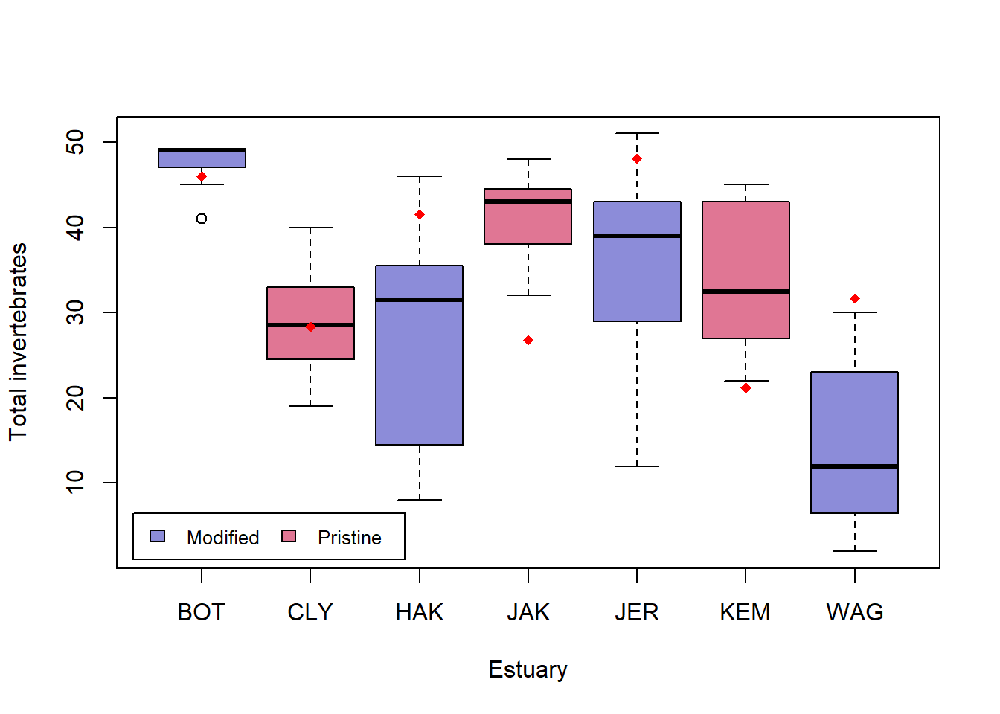
FAQ mixed models
- Do I need balanced samples to fit a mixed model?
No, unbalanced designs are fine. Balanced designs will generally give you better power though, so they are good to aim for.
- Should I sample many levels of the random effect, or lots of observations within each level?
This depends on what you are interested in. In our example, we are interested in the effect of modification. In the study design, estuaries fall directly below modification, so we need a lot of estuaries within each level of Modification to make good inference about the effects of modification. This is true in general, you need lots of samples in the level below the level you are primarily interested in.
- Does my random factor have to be a random effect?
Not necessarily. If you have a random factor (i.e., you have a random sample of categories from a categorical variable) and you want to make inferences about that variable in general, not just at the categories you observed, then include it as a random effect. If you are happy making inference about just the levels you observed, then you can include it as a fixed effect. In our example we wanted to make inference about modification in general, i.e. in every modified and unmodified estuary, so we included estuary as a random effect. If we had treated Estuary as a fixed factor, we would have been restricted to making conclusions about only the estuaries we sample.
- What if the levels of my factor aren’t really random?
This might be a problem as assumption 4 may not hold. You should always sample the random effect randomly to avoid bias and incorrect conclusions.
Crossed and nested Factors (extra)
Many experimental designs in ecology and environmental sciences require mixed models with several random effects (factors). You might have heard of nested and crossed factors.
Two factors are crossed when every category (level) of one factor co-occurs in the design with every category of the other factor. In other words, there is at least one observation in every combination of categories for the two factors.
A factor is nested within another factor when each category of the first factor co-occurs with only one category of the other. In other words, an observation has to be within one category of Factor 2 in order to have a specific category of Factor 1. All combinations of categories are not represented.
There are also intermediate designs that are partially crossed, where some levels of one factor occur in several (but not all) levels of the second factor. These designs have often been taught as separate problems with different ways to carry out analyses of variance (ANOVAs) depending on if you have crossed or nested factors. Using mixed models with the package lme4, we can think if all of these in one framework, where nested and crossed designs are modelled in the same way. Thinking about factors as crossed or nested is simplified to careful labelling of factor levels - more on this later.
Running the analysis
We will do as we did before using Modification as a
fixed facor with two levels modified and
pristine, but this time we will consider two random
effects (Estuary and Site).
Site is nested within Estuary as each site can
only belong in one estuary. When entering the data, however, we’ve been
careless and numbered sites within each estuary as 1, 2, 3 etc.
We can see this by looking at the data, and a cross tabulation.
## X Modification Estuary Site Hydroid Total Schizoporella.errata TotalSim
## 1 1 Modified JAK 1 0 44 15 45.72421
## 2 2 Modified JAK 1 0 42 8 29.58144
## 3 3 Modified JAK 2 0 32 9 50.73080
## 4 4 Modified JAK 2 0 44 14 61.45837
## 5 5 Modified JAK 3 1 42 6 29.12575
## 6 6 Modified JAK 3 1 48 12 30.51924
## 7 7 Modified JAK 4 0 45 28 16.63701
## 8 8 Modified JAK 4 0 34 1 55.14950
## 9 9 Pristine JER 1 7 29 0 41.40637
## 10 10 Pristine JER 1 5 51 0 32.94136## 7 x 4 sparse Matrix of class "dgCMatrix"
## Site
## Estuary 1 2 3 4
## BOT 2 2 2 2
## CLY 2 2 2 2
## HAK 2 2 2 2
## JAK 2 2 2 2
## JER 2 2 2 2
## KEM 2 2 . 2
## WAG 2 2 2 2Estuary JAK and estuary JER each have sites
numbered 1, even though these sites are not connected in
any way. We can also see this in the cross tabulation
xtabs. This site labelling looks crossed, where each site
occurs in each estuary, rather than nested.
We can fix this by simply telling R that Site is nested
in Estuary. It is best practice, however, to do this at the
data entry stage. If things are the same, then they should be labelled
the same, and if they are not they should be labelled differently.
To create a unique label for each site in this data set, we convert
Site to a factor (it was an integer), and create a new
variable (SiteWithin) that is the combination of Estuary
and Site
Estuaries$Site <- as.factor(Estuaries$Site)
Estuaries$SiteWithin <- paste0(Estuaries$Estuary, "_", Estuaries$Site)Now, check the structure to see that each site is nested in only one Estuary, consistent with the experimental design.
## 7 x 27 sparse Matrix of class "dgCMatrix"## [[ suppressing 27 column names 'BOT_1', 'BOT_2', 'BOT_3' ... ]]## SiteWithin
## Estuary
## BOT 2 2 2 2 . . . . . . . . . . . . . . . . . . . . . . .
## CLY . . . . 2 2 2 2 . . . . . . . . . . . . . . . . . . .
## HAK . . . . . . . . 2 2 2 2 . . . . . . . . . . . . . . .
## JAK . . . . . . . . . . . . 2 2 2 2 . . . . . . . . . . .
## JER . . . . . . . . . . . . . . . . 2 2 2 2 . . . . . . .
## KEM . . . . . . . . . . . . . . . . . . . . 2 2 2 . . . .
## WAG . . . . . . . . . . . . . . . . . . . . . . . 2 2 2 2To fit a model for total abundance, we would use:
fit.mod <- lmer(Total ~ Modification + (1 | Estuary) + (1 | SiteWithin), data = Estuaries)
# same as: lmer(Total ~ Modification + (1 | Estuary/SiteWithin), data = Estuaries)
summary(fit.mod)## Linear mixed model fit by REML ['lmerMod']
## Formula: Total ~ Modification + (1 | Estuary) + (1 | SiteWithin)
## Data: Estuaries
##
## REML criterion at convergence: 386.6
##
## Scaled residuals:
## Min 1Q Median 3Q Max
## -1.8686 -0.6687 0.1504 0.6505 1.9816
##
## Random effects:
## Groups Name Variance Std.Dev.
## SiteWithin (Intercept) 49.85 7.061
## Estuary (Intercept) 47.59 6.899
## Residual 43.65 6.607
## Number of obs: 54, groups: SiteWithin, 27; Estuary, 7
##
## Fixed effects:
## Estimate Std. Error t value
## (Intercept) 41.053 4.739 8.662
## ModificationPristine -14.553 6.232 -2.335
##
## Correlation of Fixed Effects:
## (Intr)
## MdfctnPrstn -0.760where Total is the dependent variable (left of the
~), Modification is the fixed effect, and
Estuary and SiteWithin are the random
effects.
We’ll also fit the WRONG model, to see the difference if we had used the old labels for each site.
fit.wrong <- lmer(Total ~ Modification + (1 | Estuary) + (1 | Site), data = Estuaries)
summary(fit.wrong)## Linear mixed model fit by REML ['lmerMod']
## Formula: Total ~ Modification + (1 | Estuary) + (1 | Site)
## Data: Estuaries
##
## REML criterion at convergence: 393.6
##
## Scaled residuals:
## Min 1Q Median 3Q Max
## -2.3312 -0.7631 0.1040 0.5766 1.8202
##
## Random effects:
## Groups Name Variance Std.Dev.
## Estuary (Intercept) 53.613 7.322
## Site (Intercept) 7.686 2.772
## Residual 80.045 8.947
## Number of obs: 54, groups: Estuary, 7; Site, 4
##
## Fixed effects:
## Estimate Std. Error t value
## (Intercept) 41.257 4.849 8.508
## ModificationPristine -14.757 6.124 -2.410
##
## Correlation of Fixed Effects:
## (Intr)
## MdfctnPrstn -0.727The only place we can see an obvious difference is under the Random effects table. For the correct model we have Number of obs: 52, groups: SiteWithin, 26; Estuary, 7 while the wrong model tells us we have only 4 sites, which we know is incorrect.
Note: fit.wrong would be correct if we had crossed factors
Model assumption
The assumptions are the same as for one random factor. Briefly, assumptions 1 and 5 cannot be checked, but can be ensured by taking random samples, and assumption 6 is not crucial and difficult to check. To check assumption 2 we look for a straight line relationship on the normal quantile plot. To check assumptions 3, and 4 we look for a fan shape and U shape on the residual vs. fitted plot.
par(mfrow = c(1, 2))
qqnorm(residuals(fit.mod))
scatter.smooth(residuals(fit.mod) ~ fitted(fit.mod)) # residual plot
The normal quantile plot looks reasonable, however we see here a definite fan shape in the residual vs. fit plot. Let’s try transforming the response and see if we do better.
fit.mod <- lmer(log(Total) ~ Modification + (1 | Estuary) + (1 | SiteWithin), data = Estuaries)
par(mfrow = c(1, 2))
qqnorm(residuals(fit.mod))
scatter.smooth(residuals(fit.mod) ~ fitted(fit.mod)) # residual plot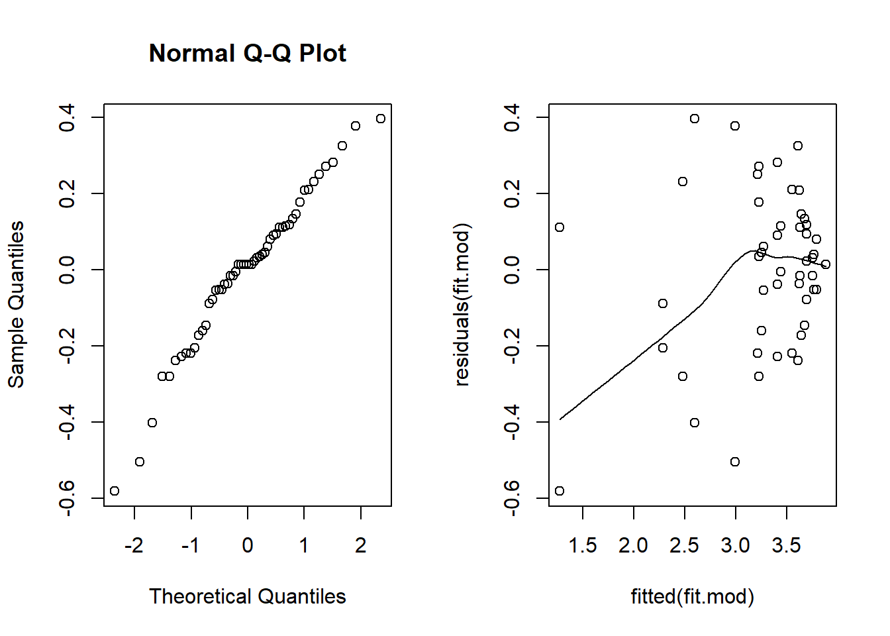 This scatterplot is much better, the fan shape is all but gone. The smooth line is below zero on the left, but there are relatively few points there, so it’s not of great concern.
Interpreting
Hypothesis test for the fixed effect
We can use the anova as before to obtain approximate
p-values for fixed effects (but this also the lmerTest
package).
ft.mod <- lmer(log(Total) ~ Modification + (1 | Estuary) + (1 | SiteWithin), data = Estuaries, REML = F)
ft.mod.0 <- lmer(log(Total) ~ (1 | Estuary) + (1 | SiteWithin), data = Estuaries, REML = F)
anova(ft.mod.0, ft.mod)## Data: Estuaries
## Models:
## ft.mod.0: log(Total) ~ (1 | Estuary) + (1 | SiteWithin)
## ft.mod: log(Total) ~ Modification + (1 | Estuary) + (1 | SiteWithin)
## npar AIC BIC logLik deviance Chisq Df Pr(>Chisq)
## ft.mod.0 4 79.223 87.179 -35.611 71.223
## ft.mod 5 77.397 87.342 -33.698 67.397 3.8258 1 0.05047 .
## ---
## Signif. codes: 0 '***' 0.001 '**' 0.01 '*' 0.05 '.' 0.1 ' ' 1We find no evidence of an effect of Modification (p=0.05047).
Hypothesis test for random effects
Similar to before, we can use a parametric bootstrapping to test the random effects. We will test if we need to have a random effect for Site given we have a random effect for Estuary in the model.
nBoot <- 1000
lrStat <- rep(NA, nBoot)
ft.null <- lmer(log(Total) ~ Modification + (1 | Estuary), Estuaries, REML = F) # null model
ft.alt <- lmer(log(Total) ~ Modification + (1 | Estuary) + (1 | SiteWithin), Estuaries, REML = F) # alternate model
lrObs <- 2 * logLik(ft.alt) - 2 * logLik(ft.null) # observed test stat
for (iBoot in 1:nBoot)
{
Estuaries$logTotalSim <- unlist(simulate(ft.null)) # resampled data
bNull <- lmer(logTotalSim ~ Modification + (1 | Estuary), Estuaries, REML = F) # null model
bAlt <- lmer(logTotalSim ~ Modification + (1 | Estuary) + (1 | SiteWithin), Estuaries, REML = F) # alternate model
lrStat[iBoot] <- 2 * logLik(bAlt) - 2 * logLik(bNull) # resampled test stat
}
mean(lrStat > lrObs) # P-value for test of Estuary effect## [1] 0The p-value is 0, so very small. We have strong evidence of an effect of Site and should keep it in the model.
Generalised mixed models (extra)
This allows to model discrete data (e.g., presence/absence) with random effects using generalised linear mixed models (GLMMs).
Assumptions
The assumptions of generalised linear mixed models are a combination of the assumptions of GLMs and mixed models.
- The observed \(y\) are independent, conditional on some predictors \(x\)
- The response \(y\) comes from a known distribution from the exponential family, with a known mean variance relationship
- There is a straight line relationship between some known function (link) of the mean of \(y\) and the predictors \(x\) and random effects \(z\)
- Random effects \(z\) are independent of \(y\)
- Random effects \(z\) are normally distributed
Running the analysis
The package lme4 allows us to model both continuous and
discrete data with one or more random effects. There are however some
limitations for discrete data.
What lme4 can do - model binary data (e.g., presence/absence) - model counts with Poisson distribution
What lme4 can’t do - model overdispersed counts (unfortunately these are really common in ecology) - provide good residual plots (we need these for assumption checking)
In this example, we have a fixed effect (Modification; modified vs pristine) and a random effect (Estuary). To test whether there is an effect of modification on individual species counts and presence/absences, we need to use generalised linear mixed models with the with the glmer function.
Consider the counts of hydroids (the variable Hydroid).
## [1] 0 0 0 0 1 1 0 0 7 5 2 0 0 0 3 3 0 0 0 0 0 0 0 0 0 0 1 1 2 1 2 2 0 0 0 0 0 0
## [39] 0 0 0 0 1 0 0 0 0 3 1 0 1 2 2 2Looking at the data, you can see the counts are small, with many zeros, so we don’t want to treat these as continuous. We will model them as counts with a Poisson distribution, and also as presence/absence data.
Binary data
To model presence/absence, we first create a variable HydroidPres which is 1 (TRUE) when Hydroids are present and 0 (FALSE) otherwise.
To fit a model for the presence or absence of hydroids, we would use
glmer with family=binomial
As usual, we can examine residual plots to check assumptions.
par(mfrow = c(1, 2))
plot(residuals(fit.bin) ~ fitted(fit.bin), main = "residuals v.s. Fitted")
qqnorm(residuals(fit.bin))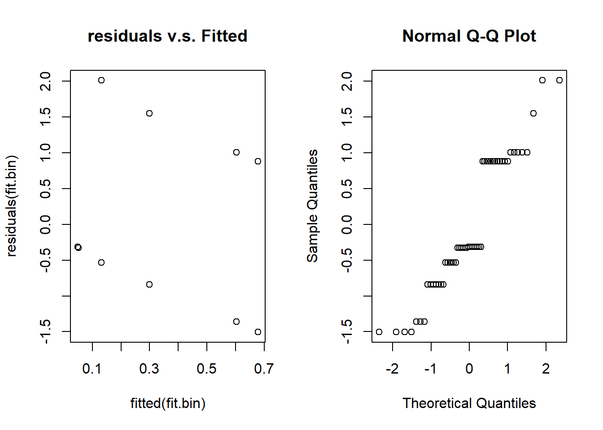
Briefly looking at our assumptions, Assumptions 1 and 4 we can’t check, but will be true if we sample randomly. Assumption 5 is hard to check in general and not crucial. Assumption 2 and 3 we should check with the residual plots. Unfortunately, for binary data residual plots are quite difficult to interpret. In the residual v.s. fitted plot all the 0’s are in a line (lower left) and all the ones are in a line (upper right) due to the discreteness of the data.
Hypothesis testing
- Fixed effects
For generalised linear mixed models (GLMMs), you can use
lmerTest or use the parametric bootstrap for fixed effects
inference. The p-values from the anova function are quite
approximate for GLMMs even for fixed effects. Sometimes the
glmer function will give warnings or errors.
nBoot <- 1000
lrStat <- rep(NA, nBoot)
ft.null <- glmer(HydroidPres ~ 1 + (1 | Estuary), family = binomial, data = Estuaries) # null model
ft.alt <- glmer(HydroidPres ~ Modification + (1 | Estuary), family = binomial, data = Estuaries) # alternate model
lrObs <- 2 * logLik(ft.alt) - 2 * logLik(ft.null) # observed test stat
for (iBoot in 1:nBoot)
{
Estuaries$HydroidPresSim <- unlist(simulate(ft.null)) # resampled data
tryCatch(
{ # sometimes the glmer code doesn't converge
bNull <- glmer(HydroidPresSim ~ 1 + (1 | Estuary), family = binomial, data = Estuaries) # null model
bAlt <- glmer(HydroidPresSim ~ Modification + (1 | Estuary), family = binomial, data = Estuaries) # alternate model
lrStat[iBoot] <- 2 * logLik(bAlt) - 2 * logLik(bNull) # resampled test stat
},
warning = function(war) {
lrStat[iBoot] <- NA
},
error = function(err) {
lrStat[iBoot] <- NA
}
) # if code doesn't converge skip sim
}
mean(lrStat > lrObs, na.rm = T) # P-value for test of Estuary effect## [1] 0.04426788We have evidence of an effect of modification on the presence of hydroids.
- Random effects
As before you could run hypothesis tests on the random effects using a parametric bootstrap.
Count data
lme4 can model count data that has a Poisson
distribution. If the data do not fit the Poisson mean/variance
relationship, then things become much more complicated, and we won’t
cover that situation here.
To model the counts of hydroids, we would use use glmer
with family=poisson.
To check the assumptions:
par(mfrow = c(1, 2))
plot(residuals(fit.pois) ~ fitted(fit.pois), main = "Residuals vs. Fitted")
qqnorm(residuals(fit.pois))
Once again, the residual plots aren’t that useful, but we at least get an idea about whether the variance assumption is reasonable. There is no obvious fan shape, so a Poisson model seems okay.
- Fixed effects
nBoot <- 1000
lrStat <- rep(NA, nBoot)
ft.null <- glmer(Hydroid ~ 1 + (1 | Estuary), family = poisson, data = Estuaries) # null model
ft.alt <- glmer(Hydroid ~ Modification + (1 | Estuary), family = poisson, data = Estuaries) # alternate model
lrObs <- 2 * logLik(ft.alt) - 2 * logLik(ft.null) # observed test stat
for (iBoot in 1:nBoot)
{
Estuaries$HydroidSim <- unlist(simulate(ft.null)) # resampled data
tryCatch(
{
bNull <- glmer(HydroidSim ~ 1 + (1 | Estuary), family = poisson, data = Estuaries) # null model
bAlt <- glmer(HydroidSim ~ Modification + (1 | Estuary), family = poisson, data = Estuaries) # alternate model
lrStat[iBoot] <- 2 * logLik(bAlt) - 2 * logLik(bNull) # resampled test stat
},
warning = function(war) {
lrStat[iBoot] <- NA
},
error = function(err) {
lrStat[iBoot] <- NA
}
) # if code doesn't converge skip sim# lrStat[iBoot]
}- Random effects
As before you could run hypothesis tests on the random effects using a parametric bootstrap.
A non Poisson example
Often, count data will not fit a Poisson distribution. Look at what happens if you try and model the counts of the bryozoan, Schizoporella errata, from that same data set.
fit.pois2 <- glmer(Schizoporella.errata ~ Modification + (1 | Estuary), family = poisson, data = Estuaries)
par(mfrow = c(1, 2))
plot(residuals(fit.pois) ~ fitted(fit.pois), main = "residuals vs. Fitted")
qqnorm(residuals(fit.pois))
Here we can see a distinct fan shape in the residual vs. fitted plot.
Unfortunately lme4 can’t handle this situation
(overdispersion), and there is no easy way to model these data. If this
happens in your data try the glmmADMB package.
fit.pois <- glmer(Hydroid ~ Modification + (1 | Estuary), family = poisson, data = Estuaries)
means <- fitted(fit.pois) # this will give the estimate at each data point
ModEst <- unique(Estuaries[c("Estuary", "Modification")]) # find which Estuaries are modified
cols <- as.numeric(ModEst[order(ModEst[, 1]), 2]) + 3 # Assign colour by modification
boxplot(Hydroid ~ Estuary, data = Estuaries, col = cols, xlab = "Estuary", ylab = "Count of hydroids")
legend("topleft",
inset = .02,
c("Modified", "Pristine"), fill = unique(cols), horiz = TRUE, cex = 0.8
)
Est.means <- summarize(means, Estuaries$Estuary, mean)$means # extract means by Estuary
stripchart(Est.means ~ sort(unique(Estuary)), data = Estuaries, pch = 18, col = "red", vertical = TRUE, add = TRUE) # plot means by estuary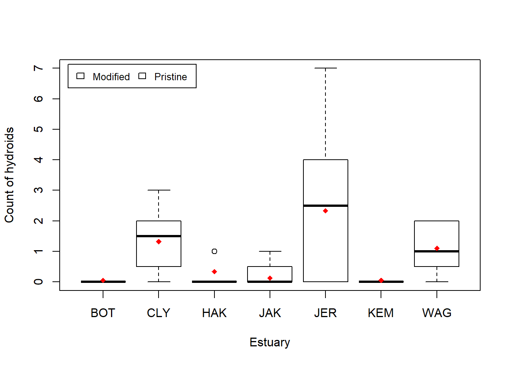 > Source: Gordana Popovic
Generalised additive models (GAM)
Many data in the environmental sciences do not fit simple linear models and are best described by “wiggly models”, also known as Generalised Additive Models (GAMs). Let’s start by a tweet from famous Biostatisticians Gavin L. Simpson:
1. GAMs are just GLMs 2. GAMs fit wiggly terms
3. use + s(x) not x in your syntax
4. use method = "REML" 5. always look at
gam.check()
This is basically all there is too it - an extension of generalised linear models (GLMs) with a smoothing function. Of course, there may be many sophisticated things going on when you fit a model with smooth terms, but you only need to understand the rationale and some basic theory.
GAMs in a nutshells
Let’s start with an equation for a Gaussian linear model:
\[y = \beta_0 + \beta_1*x_1 + \epsilon \;, \epsilon \sim N(0,\sigma^2)\] What changes in a GAM is the presence of a smoothing term:
\[y = \beta_0 + f(x_1) + \epsilon \;, \epsilon \sim N(0,\sigma^2)\] This simply means that the contribution to the linear predictor is now some function \(f\). This is not that dissimilar conceptually to using a quadratic (\(x_1^2\)) or cubic term (\(x_1^3\)) as your predictor.
The function \(f\) can be something more funky or kinky - here, we’re going to focus on splines. You can have combinations of linear and smooth terms in your model, for example:
\[y = \beta_0 + \beta_1*x_1 +f(x_2) + \epsilon \;, \epsilon \sim N(0,\sigma^2)\] or we can fit generalised distributions and random effects, for example:
\[ln(y) = \beta_0 + f(x_1) + \epsilon \;, \epsilon \sim Poisson(\lambda)\] \[ln(y) = \beta_0 + f(x_1) + z_1 \gamma + \epsilon \;, \epsilon \sim Poisson(\lambda)\;, \gamma \sim N(0, \Sigma)\]
A simple example
Let’s create a data frame and fill it with some simulated data with an obvious non-linear trend and compare how well some models fit to that data.
x <- seq(0, pi * 2, 0.1)
sin_x <- sin(x)
y <- sin_x + rnorm(n = length(x), mean = 0, sd = sd(sin_x / 2))
Sample_data <- data.frame(y, x)
ggplot(Sample_data, aes(x, y)) +
geom_point()
Let’s fit a normal linear model and check residuals:
lm_y <- lm(y ~ x, data = Sample_data)
ggplot(Sample_data, aes(x, y)) +
geom_point() +
geom_smooth(method = lm)## `geom_smooth()` using formula = 'y ~ x'
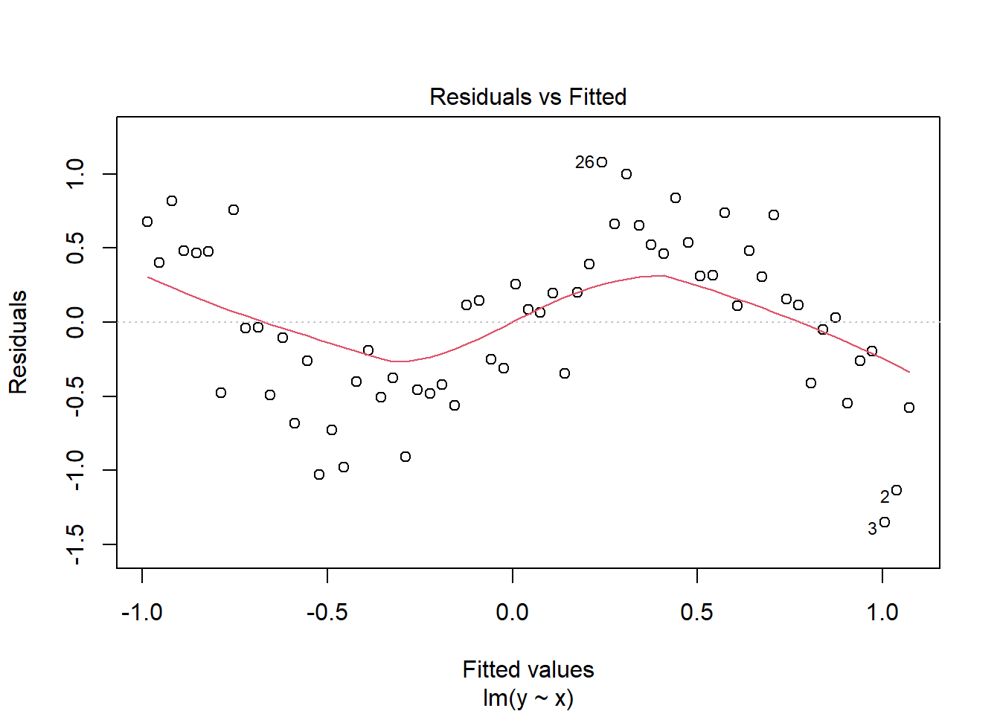
Clearly, the residuals are not evenly spread across values of \(x\), that’s call a pattern in the residuals. We need to consider a better model.
The package mgcv is the package of choice for running
GAMs in R. To run a GAM, we use:
To extract the fitted values, we can use predict just
like normal:
But for simple models, we can also utilise the method =
argument in geom_smooth, specifying the model formula.
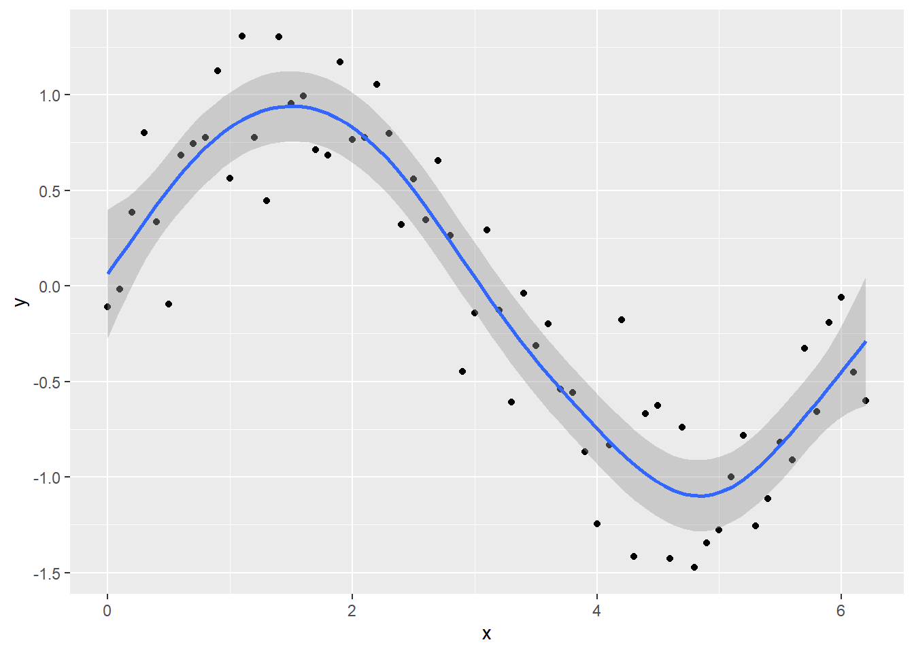
You can see the model is better fit to the data, but always check the diagnostics.
check.gam is quick and easy to view the residual
plots.
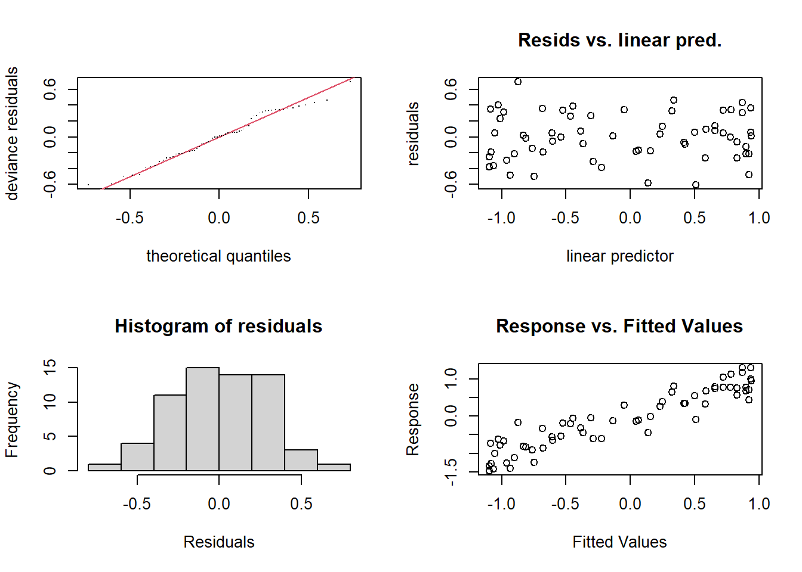
##
## Method: REML Optimizer: outer newton
## full convergence after 6 iterations.
## Gradient range [-1.064571e-10,6.811174e-11]
## (score 35.59551 & scale 0.1328934).
## Hessian positive definite, eigenvalue range [2.057361,30.69261].
## Model rank = 10 / 10
##
## Basis dimension (k) checking results. Low p-value (k-index<1) may
## indicate that k is too low, especially if edf is close to k'.
##
## k' edf k-index p-value
## s(x) 9.00 5.68 1.17 0.88Using summary with the model object will give you the significance of the smooth term (along with any parametric terms, if you’ve included them), along with the variance explained. In this example, a pretty decent fit. The ‘edf’ is the estimated degrees of freedom - essentially, the larger the number, the more wiggly the fitted model. Values of around 1 tend to be close to a linear term. You can read about penalisation and shrinkage for more on what the edf reflects.
As mentioned above, we focus on splines, as they are
the smooth functions that are most commonly implemented
(and are pretty quick and stable). This is where we say we want to fit
\(y\) as a linear function of some set
of functions of \(x\) . The default in
mgcv is a thin plate regression spline -
the two common ones you’ll probably see are these, and cubic
regression splines. Cubic regression splines have the
traditional knots that we think of when we talk about splines - they’re
evenly spread across the covariate range in this case.
A real world example (extra)
We’re going to look at some CO2 data from Manua Loa (Hawaii). We will fit a couple GAMs to the data to try and pick apart the intra- and inter-annual trends. We want to look at inter-annual trend first, so let’s convert the date into a continuous time variable (take a subset for visualisation).
CO2 <- read.csv("data/mauna_loa_co2.csv")
CO2$time <- as.integer(as.Date(CO2$Date, format = "%d/%m/%Y"))
CO2_dat <- CO2
CO2 <- CO2_dat[CO2_dat$year %in% (2000:2010), ]OK, so let’s plot it and look at a smooth term for time.

\[y = \beta_0 + f_{trend}(time) + \epsilon \;, \epsilon \sim N(0,\sigma^2)\] We can fit a GAM for these data using:
which fits a model with a single smooth term for time. We can look at the predicted values for this:

Note how the smooth term actually reduces to a ‘normal’ linear term here (with an edf of 1) - that’s the nice thing about penalised regression splines. But if we check the model, then we see something is amuck.
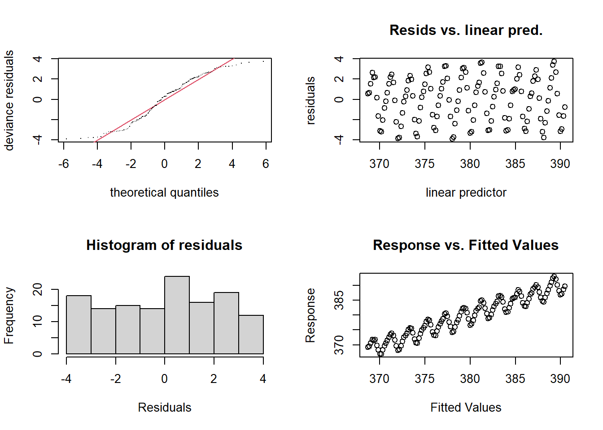
##
## Method: REML Optimizer: outer newton
## full convergence after 8 iterations.
## Gradient range [-0.0001447502,6.463421e-05]
## (score 291.2359 & scale 4.79491).
## Hessian positive definite, eigenvalue range [0.0001447177,64.99994].
## Model rank = 10 / 10
##
## Basis dimension (k) checking results. Low p-value (k-index<1) may
## indicate that k is too low, especially if edf is close to k'.
##
## k' edf k-index p-value
## s(time) 9 1 0.16 <2e-16 ***
## ---
## Signif. codes: 0 '***' 0.001 '**' 0.01 '*' 0.05 '.' 0.1 ' ' 1The residual plots have a very odd looking rise-and-fall pattern - clearly there is some dependance structure (and we can probably guess it has something to do with intra-annual fluctuations). Let’s try again, and introduce something called a cyclical smoother.
\[y = \beta_0 +f_{intrannual}(month)+ f_{trend}(time) + \epsilon \;, \epsilon \sim N(0,\sigma^2)\]
The cyclical smooth term, \(f_{intrannual}(month)\), is comprised of basis functions just the same as we have seen already, except that the end points of the spline are constrained to be equal - which makes sense when we’re modelling a variable that is cyclical (across months/years).
We’ll now see the bs = argument to choose the type of
smoother, and the k = argument to choose the number of
knots, because cubic regression splines have a set number of knots. We
use 12 knots, because there are 12 months.
Let’s look at the fitted smooth terms:

Looking at both smooth terms, we can see that the monthly smoother is picking up that monthly rise and fall of CO2 - looking at the relative magnitudes (i.e. monthly fluctuation vs. long-term trend), we can see how important it is to disintangle the components of the time series. Let’s see how the model diagnostics look now:
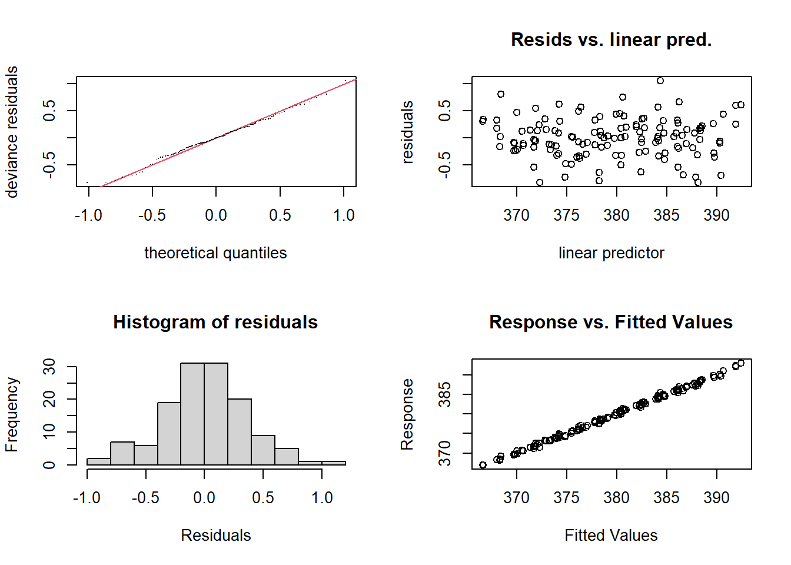
##
## Method: REML Optimizer: outer newton
## full convergence after 6 iterations.
## Gradient range [-2.640054e-06,5.25847e-08]
## (score 87.72571 & scale 0.1441556).
## Hessian positive definite, eigenvalue range [1.026183,65.43149].
## Model rank = 20 / 20
##
## Basis dimension (k) checking results. Low p-value (k-index<1) may
## indicate that k is too low, especially if edf is close to k'.
##
## k' edf k-index p-value
## s(month) 10.00 8.67 0.72 <2e-16 ***
## s(time) 9.00 6.61 0.87 0.09 .
## ---
## Signif. codes: 0 '***' 0.001 '**' 0.01 '*' 0.05 '.' 0.1 ' ' 1Much better. Let’s look at how the seasonal component stacks up against the full long term trend.
CO2_season_time <- gam(co2 ~ s(month, bs = "cc", k = 12) + s(time), data = CO2_dat, method = "REML")
par(mfrow = c(1, 2))
plot(CO2_season_time)
You can essentially present model results from a GAM as if it were
any other linear model, the main difference being that for the smooth
terms, there is no single coefficient you can make inference from
(i.e. negative, positive, effect size etc.). So you need to rely on
either interpretting the parital effects of the smooth terms visually
(e.g. from a call to plot(gam_model)) or make inference
from the predicted values. You can of course include normal linear terms
in the model (either continuous or categorical, and in an ANOVA type
framework even) and make inference from them like you normally would.
Indeed, GAMs are often useful for accounting for a non-linear phenomonon
that is not directly of interest, but needs to be acocunted for when
making inferece about other variables.
CO2_pred <- data.frame(
time = CO2_dat$time,
co2 = CO2_dat$co2,
predicted_values = predict(CO2_season_time, newdata = CO2_dat)
)
ggplot(CO2_pred, aes(x = time)) +
geom_point(aes(y = co2), size = 1, alpha = 0.5) +
geom_line(aes(y = predicted_values), colour = "red")
There’s more to the story - perhaps spatial autocorrelation of some kind - but we will end it for today. A great blog with lots of stuff on GAMs: https://www.fromthebottomoftheheap.net/
Source: Mitchell Lyons
References
Bruce, P., Bruce, A. (2017). Pratical Statistics for Data Scientists. O’Reilly Media, Inc.
Peña, E. A., & Slate, E. H. (2006). Global validation of linear model assumptions. Journal of the American Statistical Association, 101(473), 341-354.